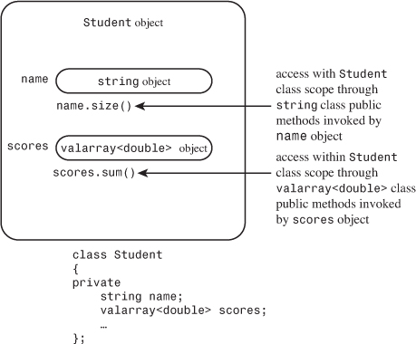
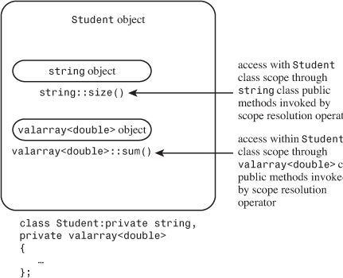
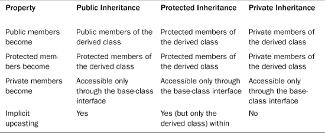
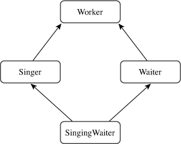
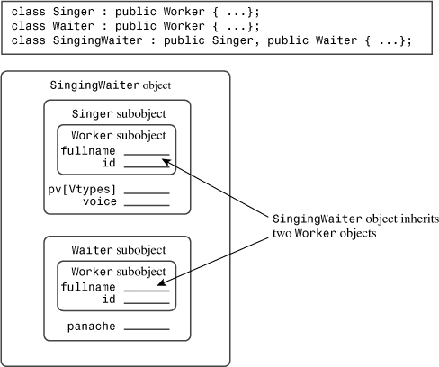
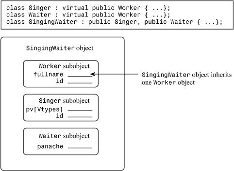
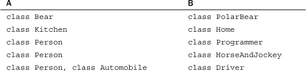

In this chapter you’ll learn about the following:
• Has-a relationships
• Classes with member objects (containment)
• The valarray template class
• Private and protected inheritance
• Multiple inheritance
• Virtual base classes
• Creating class templates
• Using class templates
• Template specializations
One of the main goals of C++ is to facilitate the reuse of code. Public inheritance is one mechanism for achieving this goal, but it’s not the only one. This chapter investigates other choices. One technique is to use class members that are themselves objects of another class. This is referred to as containment or composition or layering. Another option is to use private or protected inheritance. Containment, private inheritance, and protected inheritance are typically used to implement has-a relationships—that is, relationships for which the new class has an object of another class. For example, a HomeTheater class might have a BluRayPlayer object. Multiple inheritance lets you create classes that inherit from two or more base classes, combining their functionality.
Chapter 10, “Objects and Classes,” introduces function templates. In this chapter we’ll look at class templates, which provide another way of reusing code. A class template lets you define a class in generic terms. Then you can use the template to create specific classes defined for specific types. For example, you could define a general stack template and then use the template to create one class that represents a stack of int values and another class that represents a stack of double values. You could even generate a class that represents a stack of stacks.
Let’s begin with classes that include class objects as members. Some classes, such as the string class or the standard C++ class templates discussed in Chapter 16, “The string Class and the Standard Template Library,” offer convenient ways of representing components of a more extensive class. Let’s look at a particular example now.
What is a student? Someone enrolled in a school? Someone engaged in thoughtful investigation? A refugee from the harsh exigencies of the real world? Someone with an identifying name and a set of quiz scores? Clearly, the last definition is a totally inadequate characterization of a person, but it is well suited for a simple computer representation. So let’s develop a Student class based on that definition.
Simplifying a student to a name and a set of quiz scores suggests using a class with two members: one to represent the name and one to represent the scores. For the name, you could use a character array, but that puts a size limitation on the name. Or you could use a char pointer and dynamic memory allocation. However, as Chapter 12, “Classes and Dynamic Memory Allocation,” illustrates, that requires a lot of supporting code. Better yet, you could use an object of a class for which someone has already done all the work. For example, you could use an object of the String class (see Chapter 12) or of the standard C++ string class. The simpler choice is the string class because the C++ library already provides all the implementation code as well as a superior implementation. (To use the String class, you’d have to make the string1.cpp implementation file part of your project.)
Representing the quiz scores presents similar choices. You could use a fixed-size array, which places a size limitation. You could use dynamic memory allocation and provide a large body of supporting code. You could use your own design of a class, using dynamic memory allocation to represent an array. You could look for a standard C++ library class that is capable of representing the data.
Developing your own class is not out of the question. A simple version wouldn’t be that difficult because an array of double shares many similarities with an array of char, so you could base the design of an array-of-double class on the String class design. And in fact, that is what earlier editions of this book do.
But, of course, it is even easier if the library already provides a suitable class, and it does: the valarray class.
valarray Class: A Quick LookThe valarray class is supported by the valarray header file. As its name suggests, the class is targeted to deal with numeric values (or with classes with similar properties), so it supports operations such as summing the contents and finding the largest and smallest values in an array. So that it can handle different data types, valarray is defined as a template class. Later, this chapter goes into how to define template classes, but all you need to know now is how to use one.
The template aspect means that you have to provide a specific type when declaring an object. To do so when declaring an object, you follow the identifier valarray with angle brackets that contain the desired type:
valarray<int> q_values; // an array of int
valarray<double> weights; // an array of double
You’ve seen this syntax before in Chapter 4, “Compound Types,” with the vector and array classes, and it’s pretty easy. (Those template classes also can hold numbers, but they don’t provide all the arithmetic support the valarray class does.)
The class aspect means that to use valarray objects, you need to know something about class constructors and other class methods. Here are several examples that use some of the constructors:
double gpa[5] = {3.1, 3.5, 3.8, 2.9, 3.3};
valarray<double> v1; // an array of double, size 0
valarray<int> v2(8); // an array of 8 int elements
valarray<int> v3(10,8); // an array of 8 int elements,
// each set to 10
valarray<double> v4(gpa, 4); // an array of 4 elements
// initialized to the first 4 elements of gpa
As you can see, you can create an empty array of zero size, an empty array of a given size, an array with all elements initialized to the same value, and an array initialized using the values from an ordinary array. With C++11, you also can use an initializer list:
valarray<int> v5 = {20, 32, 17, 9}; // C++11
Next, here are a few of the methods:
• The operator[]() method provides access to individual elements.
• The size() method returns the number of elements.
• The sum() method returns the sum of the elements.
• The max() method returns the largest element.
• The min() method returns the smallest element.
There are many more methods, some of which are presented in Chapter 16, but you’ve already seen more than enough to proceed with this example.
Student Class DesignAt this point, the design plan for the Student class is to use a string object to represent the name and a valarray<double> object to represent the quiz scores. How should this be done? You might be tempted to publicly derive a Student class from these two classes. That would be an example of multiple public inheritance, which C++ allows, but it would be inappropriate here. The reason is that the relationship of a student to these classes doesn’t fit the is-a model. A student is not a name. A student is not an array of quiz scores. What you have here is a has-a relationship. A student has a name, and a student has an array of quiz scores. The usual C++ technique for modeling has-a relationships is to use composition or containment—that is, to create a class composed of, or containing, members that are objects of another class. For example, you can begin a Student class declaration like this:
class Student
{
private:
string name; // use a string object for name
valarray<double> scores; // use a valarray<double> object for scores
...
};
As usual, the class makes the data members private. This implies that the Student class member functions can use the public interfaces of the string and valarray<double> classes to access and modify the name and scores objects, but the outside world cannot do so. The only access the outside world will have to name and scores is through the public interface defined for the Student class (see Figure 14.1). A common way of describing this is to say that the Student class acquires the implementation of its member objects but doesn’t inherit the interface. For example, a Student object uses the string implementation rather than a char * name or a char name[26] implementation for holding the name. But a Student object does not innately have the ability to use the string operator+=() function for appending.
Figure 14.1. Objects within objects: containment.

The fact that a class object doesn’t automatically acquire the interface of a contained object is a good thing for a has-a relationship. For example, string overloads the + operator to allow concatenating two strings, but, conceptually, it doesn’t make sense to concatenate two Student objects. That’s one reason not to use public inheritance in this case. On the other hand, parts of the interface for the contained class may make sense for the new class. For example, you might want to use the operator<() method from the string interface to sort Student objects by name. You can do so by defining a Student::operator<() member function that internally uses the string::operator<() function. Let’s move on to some details.
Student Class ExampleAt this point you need to provide the Student class declaration. It should, of course, include constructors and at least a few functions to provide an interface for the Student class. Listing 14.1 does this, defining all the constructors inline. It also supplies some friends for input and output.
// studentc.h -- defining a Student class using containment
#ifndef STUDENTC_H_
#define STUDENTC_H_
#include <iostream>
#include <string>
#include <valarray>
class Student
{
private:
typedef std::valarray<double> ArrayDb;
std::string name; // contained object
ArrayDb scores; // contained object
// private method for scores output
std::ostream & arr_out(std::ostream & os) const;
public:
Student() : name("Null Student"), scores() {}
explicit Student(const std::string & s)
: name(s), scores() {}
explicit Student(int n) : name("Nully"), scores(n) {}
Student(const std::string & s, int n)
: name(s), scores(n) {}
Student(const std::string & s, const ArrayDb & a)
: name(s), scores(a) {}
Student(const char * str, const double * pd, int n)
: name(str), scores(pd, n) {}
~Student() {}
double Average() const;
const std::string & Name() const;
double & operator[](int i);
double operator[](int i) const;
// friends
// input
friend std::istream & operator>>(std::istream & is,
Student & stu); // 1 word
friend std::istream & getline(std::istream & is,
Student & stu); // 1 line
// output
friend std::ostream & operator<<(std::ostream & os,
const Student & stu);
};
#endif
In order to simplify notation, the Student class contains this typedef:
typedef std::valarray<double> ArrayDb;
This enables the remaining code to use the more convenient notation ArrayDb instead of std::valarray<double>. Thus, methods and friends can refer to the ArrayDb type. Placing this typedef in the private portion of the class definition means that it can be used internally in the Student implementation but not by outside users of the Student class.
Note the use of the keyword explicit:
explicit Student(const std::string & s)
: name(s), scores() {}
explicit Student(int n) : name("Nully"), scores(n) {}
Recall that a constructor that can be called with one argument serves as an implicit conversion function from the argument type to the class type. This often is not a good idea. In the second constructor, for instance, the first argument represents the number of elements in an array rather than a value for the array, so having the constructor serve as an int-to-Student conversion function does not make sense. Using explicit turns off implicit conversions. If this keyword were omitted, code like the following would be possible:
Student doh("Homer", 10); // store "Homer", create array of 10 elements
doh = 5; // reset name to "Nully", reset to empty array of 5 elements
Here, the inattentive programmer typed doh instead of doh[0]. If the constructor omitted explicit, 5 would be converted to a temporary Student object, using the constructor call Student(5), with the value of "Nully" being used to set the name member. Then assignment would replace the original doh with the temporary object. With explicit in place, the compiler will catch the assignment operator as an error.
Note that constructors all use the by-now-familiar member initializer list syntax to initialize the name and scores member objects. In some cases earlier in this book, such as the following, the constructors use it to initialize members that are built-in types:
Queue::Queue(int qs) : qsize(qs) {...} // initialize qsize to qs
This code uses the name of the data member (qsize) in a member initializer list. Also constructors from previous examples, such as the following, use a member initializer list to initialize the base-class portion of a derived object:
hasDMA::hasDMA(const hasDMA & hs) : baseDMA(hs) {...}
For inherited objects, constructors use the class name in the member initializer list to invoke a specific base-class constructor. For member objects, constructors use the member name. For example, look at the last constructor in Listing 14.1:
Student(const char * str, const double * pd, int n)
: name(str), scores(pd, n) {}
Because it initializes member objects, not inherited objects, this constructor uses the member names, not the class names, in the initialization list. Each item in this initialization list invokes the matching constructor. That is, name(str) invokes the string(const char *) constructor, and scores(pd, n) invokes the ArrayDb(const double *, int) constructor, which, because of the typedef, really is the valarray<double>(const double *, int) constructor.
What happens if you don’t use the initialization list syntax? As with inherited components, C++ requires that all member objects be constructed before the rest of an object is constructed. So if you omit the initialization list, C++ uses the default constructors defined for the member objects’ classes.
The interface for a contained object isn’t public, but it can be used within the class methods. For example, here is how you can define a function that returns the average of a student’s scores:
double Student::Average() const
{
if (scores.size() > 0)
return scores.sum()/scores.size();
else
return 0;
}
This defines a method that can be invoked by a Student object. Internally, it uses the valarray size() and sum() methods. That’s because scores is a valarray object, so it can invoke the member functions of the valarray class. In short, the Student object invokes a Student method, and the Student method uses the contained valarray object to invoke valarray methods.
Similarly, you can define a friend function that uses the string version of the << operator:
// use string version of operator<<()
ostream & operator<<(ostream & os, const Student & stu)
{
os << "Scores for " << stu.name << ":\n";
...
}
Because stu.name is a string object, it invokes the operator<<(ostream &, const string &) function, which is provided as part of the string class package. Note that the operator<<(ostream & os, const Student & stu) function has to be a friend to the Student class so that it can access the name member. (Alternatively, the function could use the public Name() method instead of the private name data member.)
Similarly, the function could use the valarray implementation of << for output; unfortunately, there is none. Therefore, the class defines a private helper method to handle this task:
// private method
ostream & Student::arr_out(ostream & os) const
{
int i;
int lim = scores.size();
if (lim > 0)
{
for (i = 0; i < lim; i++)
{
os << scores[i] << " ";
if (i % 5 == 4)
os << endl;
}
if (i % 5 != 0)
os << endl;
}
else
os << " empty array ";
return os;
}
Using a helper like this gathers the messy details together in one place and makes the coding of the friend function neater:
// use string version of operator<<()
ostream & operator<<(ostream & os, const Student & stu)
{
os << "Scores for " << stu.name << ":\n";
stu.arr_out(os); // use private method for scores
return os;
}
The helper function could also act as a building block for other user-level output functions, should you choose to provide them.
Listing 14.2 shows the class methods file for the Student class. It includes methods that allow you to use the [] operator to access individual scores in a Student object.
// studentc.cpp -- Student class using containment
#include "studentc.h"
using std::ostream;
using std::endl;
using std::istream;
using std::string;
//public methods
double Student::Average() const
{
if (scores.size() > 0)
return scores.sum()/scores.size();
else
return 0;
}
const string & Student::Name() const
{
return name;
}
double & Student::operator[](int i)
{
return scores[i]; // use valarray<double>::operator[]()
}
double Student::operator[](int i) const
{
return scores[i];
}
// private method
ostream & Student::arr_out(ostream & os) const
{
int i;
int lim = scores.size();
if (lim > 0)
{
for (i = 0; i < lim; i++)
{
os << scores[i] << " ";
if (i % 5 == 4)
os << endl;
}
if (i % 5 != 0)
os << endl;
}
else
os << " empty array ";
return os;
}
// friends
// use string version of operator>>()
istream & operator>>(istream & is, Student & stu)
{
is >> stu.name;
return is;
}
// use string friend getline(ostream &, const string &)
istream & getline(istream & is, Student & stu)
{
getline(is, stu.name);
return is;
}
// use string version of operator<<()
ostream & operator<<(ostream & os, const Student & stu)
{
os << "Scores for " << stu.name << ":\n";
stu.arr_out(os); // use private method for scores
return os;
}
Aside from the private helper method, Listing 14.2 doesn’t require much new code. Using containment allows you to take advantage of the code you or someone else has already written.
Student ClassLet’s put together a small program to test the new Student class. To keep things simple, it should use an array of just three Student objects, each holding five quiz scores. And it should use an unsophisticated input cycle that doesn’t verify input and that doesn’t let you cut the input process short. Listing 14.3 presents the test program. Be sure to compile it along with studentc.cpp.
// use_stuc.cpp -- using a composite class
// compile with studentc.cpp
#include <iostream>
#include "studentc.h"
using std::cin;
using std::cout;
using std::endl;
void set(Student & sa, int n);
const int pupils = 3;
const int quizzes = 5;
int main()
{
Student ada[pupils] =
{Student(quizzes), Student(quizzes), Student(quizzes)};
int i;
for (i = 0; i < pupils; ++i)
set(ada[i], quizzes);
cout << "\nStudent List:\n";
for (i = 0; i < pupils; ++i)
cout << ada[i].Name() << endl;
cout << "\nResults:";
for (i = 0; i < pupils; ++i)
{
cout << endl << ada[i];
cout << "average: " << ada[i].Average() << endl;
}
cout << "Done.\n";
return 0;
}
void set(Student & sa, int n)
{
cout << "Please enter the student's name: ";
getline(cin, sa);
cout << "Please enter " << n << " quiz scores:\n";
for (int i = 0; i < n; i++)
cin >> sa[i];
while (cin.get() != '\n')
continue;
}
Here is a sample run of the program in Listings 14.1, 14.2, and 14.3:
Please enter the student's name: Gil Bayts
Please enter 5 quiz scores:
92 94 96 93 95
Please enter the student's name: Pat Roone
Please enter 5 quiz scores:
83 89 72 78 95
Please enter the student's name: Fleur O'Day
Please enter 5 quiz scores:
92 89 96 74 64
Student List:
Gil Bayts
Pat Roone
Fleur O'Day
Results:
Scores for Gil Bayts:
92 94 96 93 95
average: 94
Scores for Pat Roone:
83 89 72 78 95
average: 83.4
Scores for Fleur O'Day:
92 89 96 74 64
average: 83
Done.
C++ has a second means of implementing the has-a relationship: private inheritance. With private inheritance, public and protected members of the base class become private members of the derived class. This means the methods of the base class do not become part of the public interface of the derived object. They can be used, however, inside the member functions of the derived class.
Let’s look at the interface topic more closely. With public inheritance, the public methods of the base class become public methods of the derived class. In short, the derived class inherits the base-class interface. This is part of the is-a relationship. With private inheritance, the public methods of the base class become private methods of the derived class. In short, the derived class does not inherit the base-class interface. As you saw with contained objects, this lack of inheritance is part of the has-a relationship.
With private inheritance, a class does inherit the implementation. For example, if you base a Student class on a string class, the Student class winds up with an inherited string class component that can be used to store a string. Furthermore, the Student methods can use the string methods internally to access the string component.
Containment adds an object to a class as a named member object, whereas private inheritance adds an object to a class as an unnamed inherited object. This book uses the term subobject to denote an object added by inheritance or by containment.
Private inheritance, then, provides the same features as containment: Acquire the implementation, don’t acquire the interface. Therefore it, too, can be used to implement a has-a relationship. In fact, you can produce a Student class that uses private inheritance and has the same public interface as the containment version. Thus the differences between the two approaches affect the implementation, not the interface. Let’s see how you can use private inheritance to redesign the Student class.
Student Class ExampleTo get private inheritance, use the keyword private instead of public when defining the class. (Actually, private is the default, so omitting an access qualifier also leads to private inheritance.) The Student class should inherit from two classes, so the declaration should list both:
class Student : private std::string, private std::valarray<double>
{
public:
...
};
Having more than one base class is called multiple inheritance (MI). In general, MI, particularly public MI, can lead to problems that have to be resolved with additional syntax rules. We’ll talk about such matters later in this chapter. But in this particular case, MI causes no problems.
Note that the new class doesn’t need private data. That’s because the two inherited base classes already provide all the needed data members. The containment version of this example provides two explicitly named objects as members. Private inheritance, however, provides two nameless subobjects as inherited members. This is the first of the main differences in the two approaches.
Having implicitly inherited components instead of member objects affects the coding of this example because you can no longer use name and scores to describe the objects. Instead, you have to go back to the techniques you used for public inheritance. For example, consider constructors. Containment uses this constructor:
Student(const char * str, const double * pd, int n)
: name(str), scores(pd, n) {} // use object names for containment
The new version should use the member initializer list syntax for inherited classes, which uses the class name instead of a member name to identify a constructor:
Student(const char * str, const double * pd, int n)
: std::string(str), ArrayDb(pd, n) {} // use class names for inheritance
Here, as in the preceding example, ArrayDb is a typedef for std::valarray<double>. Be sure to note that the member initializer list uses terms such as std::string(str) instead of name(str). This is the second main difference in the two approaches
Listing 14.4 shows the new class declaration. The only changes are the omission of explicit object names and the use of class names instead of member names in the inline constructors.
// studenti.h -- defining a Student class using private inheritance
#ifndef STUDENTC_H_
#define STUDENTC_H_
#include <iostream>
#include <valarray>
#include <string>
class Student : private std::string, private std::valarray<double>
{
private:
typedef std::valarray<double> ArrayDb;
// private method for scores output
std::ostream & arr_out(std::ostream & os) const;
public:
Student() : std::string("Null Student"), ArrayDb() {}
explicit Student(const std::string & s)
: std::string(s), ArrayDb() {}
explicit Student(int n) : std::string("Nully"), ArrayDb(n) {}
Student(const std::string & s, int n)
: std::string(s), ArrayDb(n) {}
Student(const std::string & s, const ArrayDb & a)
: std::string(s), ArrayDb(a) {}
Student(const char * str, const double * pd, int n)
: std::string(str), ArrayDb(pd, n) {}
~Student() {}
double Average() const;
double & operator[](int i);
double operator[](int i) const;
const std::string & Name() const;
// friends
// input
friend std::istream & operator>>(std::istream & is,
Student & stu); // 1 word
friend std::istream & getline(std::istream & is,
Student & stu); // 1 line
// output
friend std::ostream & operator<<(std::ostream & os,
const Student & stu);
};
#endif
Private inheritance limits the use of base-class methods to within derived-class methods. Sometimes, however, you might like to make a base-class facility available publicly. For example, the Student class declaration suggests the ability to use an Average() function. As with containment, the technique for doing this is to use the valarray size() and sum() methods within a public Student::average() function (see Figure 14.2). Containment invoked the methods with an object:
double Student::Average() const
{
if (scores.size() > 0)
return scores.sum()/scores.size();
else
return 0;
}
Figure 14.2. Objects within objects: private inheritance.

Here, however, inheritance lets you use the class name and the scope-resolution operator to invoke base-class methods:
double Student::Average() const
{
if (ArrayDb::size() > 0)
return ArrayDb::sum()/ArrayDb::size();
else
return 0;
}
In short, the containment approach uses object names to invoke a method, whereas private inheritance uses the class name and the scope-resolution operator instead.
The scope-resolution operator allows you access to a base-class method, but what if you need the base-class object itself? For example, the containment version of the Student class implements the Name() method by having the method return the name member string object. But with private inheritance, the string object has no name. How, then, can Student code access the inner string object?
The answer is to use a type cast. Because Student is derived from string, it’s possible to type cast a Student object to a string object; the result is the inherited string object. Recall that the this pointer points to the invoking object, so *this is the invoking object—in this case, a type Student object. To avoid invoking constructors to create new objects, you use the type cast to create a reference:
const string & Student::Name() const
{
return (const string &) *this;
}
This code returns a reference to the inherited string object residing in the invoking Student object.
The technique of explicitly qualifying a function name with its class name doesn’t work for friend functions because a friend function doesn’t belong to a class. However, you can use an explicit type cast to the base class to invoke the correct functions. This is basically the same technique used to access a base-class object in a class method, but with friends you have a name for the Student object, so the code uses the name instead of *this. For example, consider the following friend function definition:
ostream & operator<<(ostream & os, const Student & stu)
{
os << "Scores for " << (const String &) stu << ":\n";
...
}
If plato is a Student object, then the following statement invokes that function, with stu being a reference to plato and os being a reference to cout:
cout << plato;
Consider the following line of code:
os << "Scores for " << (const String &) stu << ":\n";
The typecast explicitly converts stu to a reference to a type string object; that type, in turn, invokes the operator<<(ostream &, const String &) function.
The reference stu doesn’t get converted automatically to a string reference. The fundamental reason is that with private inheritance, a reference or pointer to a base class cannot be assigned a reference or pointer to a derived class without an explicit type cast.
However, even if the example used public inheritance, it would have to use explicit type casts. One reason is that without a type cast, code like the following matches the friend function prototype, leading to a recursive call:
os << stu;
A second reason is that because the class uses MI, the compiler can’t tell which base class to convert to if both base classes happen to provide an operator<<() function. Listing 14.5 shows all the Student class methods, other than those defined inline in the class declaration.
// studenti.cpp -- Student class using private inheritance
#include "studenti.h"
using std::ostream;
using std::endl;
using std::istream;
using std::string;
// public methods
double Student::Average() const
{
if (ArrayDb::size() > 0)
return ArrayDb::sum()/ArrayDb::size();
else
return 0;
}
const string & Student::Name() const
{
return (const string &) *this;
}
double & Student::operator[](int i)
{
return ArrayDb::operator[](i); // use ArrayDb::operator[]()
}
double Student::operator[](int i) const
{
return ArrayDb::operator[](i);
}
// private method
ostream & Student::arr_out(ostream & os) const
{
int i;
int lim = ArrayDb::size();
if (lim > 0)
{
for (i = 0; i < lim; i++)
{
os << ArrayDb::operator[](i) << " ";
if (i % 5 == 4)
os << endl;
}
if (i % 5 != 0)
os << endl;
}
else
os << " empty array ";
return os;
}
// friends
// use String version of operator>>()
istream & operator>>(istream & is, Student & stu)
{
is >> (string &)stu;
return is;
}
// use string friend getline(ostream &, const string &)
istream & getline(istream & is, Student & stu)
{
getline(is, (string &)stu);
return is;
}
// use string version of operator<<()
ostream & operator<<(ostream & os, const Student & stu)
{
os << "Scores for " << (const string &) stu << ":\n";
stu.arr_out(os); // use private method for scores
return os;
}
Again, because the example reuses the string and valarray code, relatively little new code is needed, aside from the private helper method.
Student ClassOnce again, it’s time to test a new class. Note that the two versions of the Student class have exactly the same public interface, so you can test the two versions with exactly the same program. The only difference is that you have to include studenti.h instead of studentc.h, and you have to link the program with studenti.cpp instead of with studentc.cpp. Listing 14.6 shows the program. Be sure to compile it along with studenti.cpp.
// use_stui.cpp -- using a class with private inheritance
// compile with studenti.cpp
#include <iostream>
#include "studenti.h"
using std::cin;
using std::cout;
using std::endl;
void set(Student & sa, int n);
const int pupils = 3;
const int quizzes = 5;
int main()
{
Student ada[pupils] =
{Student(quizzes), Student(quizzes), Student(quizzes)};
int i;
for (i = 0; i < pupils; i++)
set(ada[i], quizzes);
cout << "\nStudent List:\n";
for (i = 0; i < pupils; ++i)
cout << ada[i].Name() << endl;
cout << "\nResults:";
for (i = 0; i < pupils; i++)
{
cout << endl << ada[i];
cout << "average: " << ada[i].Average() << endl;
}
cout << "Done.\n";
return 0;
}
void set(Student & sa, int n)
{
cout << "Please enter the student's name: ";
getline(cin, sa);
cout << "Please enter " << n << " quiz scores:\n";
for (int i = 0; i < n; i++)
cin >> sa[i];
while (cin.get() != '\n')
continue;
}
Here is a sample run of the program in Listing 14.6:
Please enter the student's name: Gil Bayts
Please enter 5 quiz scores:
92 94 96 93 95
Please enter the student's name: Pat Roone
Please enter 5 quiz scores:
83 89 72 78 95
Please enter the student's name: Fleur O'Day
Please enter 5 quiz scores:
92 89 96 74 64
Student List:
Gil Bayts
Pat Roone
Fleur O'Day
Results:
Scores for Gil Bayts:
92 94 96 93 95
average: 94
Scores for Pat Roone:
83 89 72 78 95
average: 83.4
Scores for Fleur O'Day:
92 89 96 74 64
average: 83
Done.
The same input as before leads to the same output that the containment version produces.
Given that you can model a has-a relationship either with containment or with private inheritance, which should you use? Most C++ programmers prefer containment. First, it’s easier to follow. When you look at the class declaration, you see explicitly named objects representing the contained classes, and your code can refer to these objects by name. Using inheritance makes the relationship appear more abstract. Second, inheritance can raise problems, particularly if a class inherits from more than one base class. You may have to deal with issues such as separate base classes having methods with the same name or of separate base classes sharing a common ancestor. All in all, you’re less likely to run into trouble using containment. Also containment allows you to include more than one subobject of the same class. If a class needs three string objects, you can declare three separate string members by using the containment approach. But inheritance limits you to a single object. (It is difficult to tell objects apart when they are all nameless.)
However, private inheritance does offer features beyond those provided by containment. Suppose, for example, that a class has protected members, which could either be data members or member functions. Such members are available to derived classes but not to the world at large. If you include such a class in another class by using composition, the new class is part of the world at large, not a derived class. Hence it can’t access protected members. But using inheritance makes the new class a derived class, so it can access protected members.
Another situation that calls for using private inheritance is if you want to redefine virtual functions. Again, this is a privilege accorded to a derived class but not to a containing class. With private inheritance, the redefined functions would be usable just within the class, not publicly.
In general, you should use containment to model a has-a relationship. You should use private inheritance if the new class needs to access protected members in the original class or if it needs to redefine virtual functions.
Protected inheritance is a variation on private inheritance. It uses the keyword protected when listing a base class:
class Student : protected std::string,
protected std::valarray<double>
{...};
With protected inheritance, public and protected members of a base class become protected members of the derived class. As with private inheritance, the interface for the base class is available to the derived class but not to the outside world. The main difference between private and protected inheritance occurs when you derive another class from the derived class. With private inheritance, this third-generation class doesn’t get the internal use of the base-class interface. That’s because the public base-class methods become private in the derived class, and private members and methods can’t be directly accessed by the next level of derivation. With protected inheritance, public base-class methods become protected in the second generation and so are available internally to the next level of derivation.
Table 14.1 summarizes public, private, and protected inheritance. The term implicit upcasting means that you can have a base-class pointer or reference refer to a derived class object without using an explicit type cast.
Table 14.1. Varieties of Inheritance

usingPublic members of a base class become protected or private when you use protected or private derivation. Suppose you want to make a particular base-class method available publicly in the derived class. One option is to define a derived-class method that uses the base-class method. For example, suppose you want the Student class to be able to use the valarray sum() method. You can declare a sum() method in the class declaration and then define the method this way:
double Student::sum() const // public Student method
{
return std::valarray<double>::sum(); // use privately-inherited method
}
Then a Student object can invoke Student::sum(), which, in turn, applies the valarray<double>::sum() method to the embedded valarray object. (If the ArrayDb typedef is in scope, you can use ArrayDb instead of std::valarray<double>.)
There is an alternative to wrapping one function call in another: use a using declaration (such as those used with namespaces) to announce that a particular base-class member can be used by the derived class, even though the derivation is private. For example, suppose you want to be able to use the valarray min() and max() methods with the Student class. In this case, in studenti.h, you can add using declarations to the public section:
class Student : private std::string, private std::valarray<double>
{
...
public:
using std::valarray<double>::min;
using std::valarray<double>::max;
...
};
The using declaration makes the valarray<double>::min() and valarray<double>::max() methods available as if they were public Student methods:
cout << "high score: " << ada[i].max() << endl;
Note that the using declaration just uses the member name—no parentheses, no function signatures, no return types. For example, to make the valarray operator[]() method available to the Student class, you’d place the following using declaration in the public section of the Student class declaration:
using std::valarray<double>::operator[];
This would make both versions (const and non-const) available. You could then remove the existing prototypes and definitions for Student::operator[](). The using declaration approach works only for inheritance and not for containment.
There is an older way to redeclare base-class methods in a privately derived class: You place the method name in the public section of the derived class. Here’s how you would do that:
class Student : private std::string, private std::valarray<double>
{
public:
std::valarray<double>::operator[]; // redeclare as public, just use name
...
};
This looks like a using declaration without the using keyword. This approach is deprecated, meaning that the intention is to phase it out. So if your compiler supports the using declaration, you can use it to make a method from a private base class available to the derived class.
MI describes a class that has more than one immediate base class. As with single inheritance, public MI should express an is-a relationship. For example, if you have a Waiter class and a Singer class, you could derive a SingingWaiter class from the two:
class SingingWaiter : public Waiter, public Singer {...};
Note that you must qualify each base class with the keyword public. That’s because the compiler assumes private derivation unless instructed otherwise:
class SingingWaiter : public Waiter, Singer {...}; // Singer is a private base
As discussed earlier in this chapter, private and protected MI can express a has-a relationship; the studenti.h implementation of the Student class is an example. We’ll concentrate on public inheritance now.
MI can introduce new problems for programmers. The two chief problems are inheriting different methods with the same name from two different base classes and inheriting multiple instances of a class via two or more related immediate base classes. Solving these problems involves introducing a few new rules and syntax variations. Thus, using MI can be more difficult and problem-prone than using single inheritance. For this reason, many in the C++ community object strongly to MI; some want it removed from the language. Others love MI and argue that it’s very useful, even necessary, for particular projects. Still others suggest using MI cautiously and in moderation.
Let’s explore a particular example and see what the problems and solutions are. You need several classes to create an MI situation. For this example, we’ll define an abstract Worker base class and derive a Waiter class and a Singer class from it. Then we can use MI to derive a SingingWaiter class from the Waiter and Singer classes (see Figure 14.3). This is a case in which a base class (Worker) is inherited via two separate derivations, which is the circumstance that causes the most difficulties with MI. We start with declarations for the Worker, Waiter, and Singer classes, as shown in Listing 14.7.
Figure 14.3. MI with a shared ancestor.

// worker0.h -- working classes
#ifndef WORKER0_H_
#define WORKER0_H_
#include <string>
class Worker // an abstract base class
{
private:
std::string fullname;
long id;
public:
Worker() : fullname("no one"), id(0L) {}
Worker(const std::string & s, long n)
: fullname(s), id(n) {}
virtual ~Worker() = 0; // pure virtual destructor
virtual void Set();
virtual void Show() const;
};
class Waiter : public Worker
{
private:
int panache;
public:
Waiter() : Worker(), panache(0) {}
Waiter(const std::string & s, long n, int p = 0)
: Worker(s, n), panache(p) {}
Waiter(const Worker & wk, int p = 0)
: Worker(wk), panache(p) {}
void Set();
void Show() const;
};
class Singer : public Worker
{
protected:
enum {other, alto, contralto, soprano,
bass, baritone, tenor};
enum {Vtypes = 7};
private:
static char *pv[Vtypes]; // string equivs of voice types
int voice;
public:
Singer() : Worker(), voice(other) {}
Singer(const std::string & s, long n, int v = other)
: Worker(s, n), voice(v) {}
Singer(const Worker & wk, int v = other)
: Worker(wk), voice(v) {}
void Set();
void Show() const;
};
#endif
The class declarations in Listing 14.7 include some internal constants that represent voice types. An enumeration makes alto, contralto, and so on symbolic constants for voice types, and the static array pv holds pointers to the C-style string equivalents. The implementation file, shown in Listing 14.8, initializes this array and provides method definitions.
// worker0.cpp -- working class methods
#include "worker0.h"
#include <iostream>
using std::cout;
using std::cin;
using std::endl;
// Worker methods
// must implement virtual destructor, even if pure
Worker::~Worker() {}
void Worker::Set()
{
cout << "Enter worker's name: ";
getline(cin, fullname);
cout << "Enter worker's ID: ";
cin >> id;
while (cin.get() != '\n')
continue;
}
void Worker::Show() const
{
cout << "Name: " << fullname << "\n";
cout << "Employee ID: " << id << "\n";
}
// Waiter methods
void Waiter::Set()
{
Worker::Set();
cout << "Enter waiter's panache rating: ";
cin >> panache;
while (cin.get() != '\n')
continue;
}
void Waiter::Show() const
{
cout << "Category: waiter\n";
Worker::Show();
cout << "Panache rating: " << panache << "\n";
}
// Singer methods
char * Singer::pv[] = {"other", "alto", "contralto",
"soprano", "bass", "baritone", "tenor"};
void Singer::Set()
{
Worker::Set();
cout << "Enter number for singer's vocal range:\n";
int i;
for (i = 0; i < Vtypes; i++)
{
cout << i << ": " << pv[i] << " ";
if ( i % 4 == 3)
cout << endl;
}
if (i % 4 != 0)
cout << endl;
while (cin >> voice && (voice < 0 || voice >= Vtypes) )
cout << "Please enter a value >= 0 and < " << Vtypes << endl;
while (cin.get() != '\n')
continue;
}
void Singer::Show() const
{
cout << "Category: singer\n";
Worker::Show();
cout << "Vocal range: " << pv[voice] << endl;
}
Listing 14.9 provides a brief test of the classes, using a polymorphic array of pointers.
// worktest.cpp -- test worker class hierarchy
#include <iostream>
#include "worker0.h"
const int LIM = 4;
int main()
{
Waiter bob("Bob Apple", 314L, 5);
Singer bev("Beverly Hills", 522L, 3);
Waiter w_temp;
Singer s_temp;
Worker * pw[LIM] = {&bob, &bev, &w_temp, &s_temp};
int i;
for (i = 2; i < LIM; i++)
pw[i]->Set();
for (i = 0; i < LIM; i++)
{
pw[i]->Show();
std::cout << std::endl;
}
return 0;
}
Here is the output of the program in Listings 14.7, 14.8, and 14.9:
Enter waiter's name: Waldo Dropmaster
Enter worker's ID: 442
Enter waiter's panache rating: 3
Enter singer's name: Sylvie Sirenne
Enter worker's ID: 555
Enter number for singer's vocal range:
0: other 1: alto 2: contralto 3: soprano
4: bass 5: baritone 6: tenor
3
Category: waiter
Name: Bob Apple
Employee ID: 314
Panache rating: 5
Category: singer
Name: Beverly Hills
Employee ID: 522
Vocal range: soprano
Category: waiter
Name: Waldo Dropmaster
Employee ID: 442
Panache rating: 3
Category: singer
Name: Sylvie Sirenne
Employee ID: 555
Vocal range: soprano
The design seems to work, with pointers to Waiter invoking Waiter::Show() and Waiter::Set(), and pointers to Singer invoking Singer::Show() and Singer::Set(). However, it leads to some problems if you add a SingingWaiter class derived from both the Singer class and Waiter class. In particular, you’ll need to face the following questions:
• How many workers?
• Which method?
Suppose you begin by publicly deriving SingingWaiter from Singer and Waiter:
class SingingWaiter: public Singer, public Waiter {...};
Because both Singer and Waiter inherit a Worker component, SingingWaiter winds up with two Worker components (see Figure 14.4).
Figure 14.4. Inheriting two base-class objects.

As you might expect, this raises problems. For example, ordinarily you can assign the address of a derived-class object to a base-class pointer, but this becomes ambiguous now:
SingingWaiter ed;
Worker * pw = &ed; // ambiguous
Normally, such an assignment sets a base-class pointer to the address of the base-class object within the derived object. But ed contains two Worker objects, so there are two addresses from which to choose. You could specify which object by using a type cast:
Worker * pw1 = (Waiter *) &ed; // the Worker in Waiter
Worker * pw2 = (Singer *) &ed; // the Worker in Singer
This certainly complicates the technique of using an array of base-class pointers to refer to a variety of objects (polymorphism).
Having two copies of a Worker object causes other problems, too. However, the real issue is why should you have two copies of a Worker object at all? A singing waiter, like any other worker, should have just one name and one ID. When C++ added MI to its bag of tricks, it added a virtual base class to make this possible.
Virtual base classes allow an object derived from multiple bases that themselves share a common base to inherit just one object of that shared base class. For this example, you would make Worker a virtual base class to Singer and Waiter by using the keyword virtual in the class declarations (virtual and public can appear in either order):
class Singer : virtual public Worker {...};
class Waiter : public virtual Worker {...};
Then you would define SingingWaiter as before:
class SingingWaiter: public Singer, public Waiter {...};
Now a SingingWaiter object will contain a single copy of a Worker object. In essence, the inherited Singer and Waiter objects share a common Worker object instead of each bringing in its own copy (see Figure 14.5). Because SingingWaiter now contains one Worker subobject, you can use polymorphism again.
Figure 14.5. Inheritance with a virtual base class.

Let’s look at some questions you might have:
• Why the term virtual?
• Why don’t we dispense with declaring base classes virtual and make virtual behavior the norm for MI?
• Are there any catches?
First, why the term virtual? After all, there doesn’t seem to be an obvious connection between the concepts of virtual functions and virtual base classes. There is strong pressure from the C++ community to resist the introduction of new keywords. It would be awkward, for example, if a new keyword corresponded to the name of some important function or variable in a major program. So C++ merely recycled the keyword virtual for the new facility—a bit of keyword overloading.
Next, why don’t we dispense with declaring base classes virtual and make virtual behavior the norm for MI? First, there are cases in which you might want multiple copies of a base. Second, making a base class virtual requires that a program do some additional accounting, and you shouldn’t have to pay for that facility if you don’t need it. Third, there are the disadvantages presented in the next paragraph.
Finally, are there catches? Yes. Making virtual base classes work requires adjustments to C++ rules, and you have to code some things differently. Also using virtual base classes may involve changing existing code. For example, adding the SingingWaiter class to the Worker hierarchy requires that you go back and add the virtual keyword to the Singer and Waiter classes.
Having virtual base classes requires a new approach to class constructors. With nonvirtual base classes, the only constructors that can appear in an initialization list are constructors for the immediate base classes. But these constructors can, in turn, pass information on to their bases. For example, you can have the following organization of constructors:
class A
{
int a;
public:
A(int n = 0) : a(n) {}
...
};
class B: public A
{
int b;
public:
B(int m = 0, int n = 0) : A(n), b(m) {}
...
};
class C : public B
{
int c;
public:
C(int q = 0, int m = 0, int n = 0) : B(m, n), c(q) {}
...
};
A C constructor can invoke only constructors from the B class, and a B constructor can invoke only constructors from the A class. Here the C constructor uses the q value and passes the values of m and n back to the B constructor. The B constructor uses the value of m and passes the value of n back to the A constructor.
This automatic passing of information doesn’t work if Worker is a virtual base class. For example, consider the following possible constructor for the MI example:
SingingWaiter(const Worker & wk, int p = 0, int v = Singer::other)
: Waiter(wk,p), Singer(wk,v) {} // flawed
The problem is that automatic passing of information would pass wk to the Worker object via two separate paths (Waiter and Singer). To avoid this potential conflict, C++ disables the automatic passing of information through an intermediate class to a base class if the base class is virtual. Thus, the previous constructor will initialize the panache and voice members, but the information in the wk argument won’t get to the Waiter subobject. However, the compiler must construct a base object component before constructing derived objects; in this case, it will use the default Worker constructor.
If you want to use something other than the default constructor for a virtual base class, you need to invoke the appropriate base constructor explicitly. Thus, the constructor should look like this:
SingingWaiter(const Worker & wk, int p = 0, int v = Singer::other)
: Worker(wk), Waiter(wk,p), Singer(wk,v) {}
Here the code explicitly invokes the Worker(const Worker &) constructor. Note that this usage is legal and often necessary for virtual base classes, and it is illegal for nonvirtual base classes.
If a class has an indirect virtual base class, a constructor for that class should explicitly invoke a constructor for the virtual base class unless all that is needed is the default constructor for the virtual base class.
In addition to introducing changes in class constructor rules, MI often requires other coding adjustments. Consider the problem of extending the Show() method to the SingingWaiter class. Because a SingingWaiter object has no new data members, you might think the class could just use the inherited methods. This brings up the first problem. Suppose you do omit a new version of Show() and try to use a SingingWaiter object to invoke an inherited Show() method:
SingingWaiter newhire("Elise Hawks", 2005, 6, soprano);
newhire.Show(); // ambiguous
With single inheritance, failing to redefine Show() results in using the most recent ancestral definition. In this case, each direct ancestor has a Show() function, which makes this call ambiguous.
Multiple Inheritance can result in ambiguous function calls. For example, a BadDude class could inherit two quite different Draw() methods from a Gunslinger class and a PokerPlayer class.
You can use the scope-resolution operator to clarify what you mean:
SingingWaiter newhire("Elise Hawks", 2005, 6, soprano);
newhire.Singer::Show(); // use Singer version
However, a better approach is to redefine Show() for SingingWaiter and to have it specify which Show() to use. For example, if you want a SingingWaiter object to use the Singer version, you could use this:
void SingingWaiter::Show()
{
Singer::Show();
}
This method of having the derived method call the base method works well enough for single inheritance. For example, suppose that the HeadWaiter class derives from the Waiter class. You could use a sequence of definitions like this, with each derived class adding to the information displayed by its base class:
void Worker::Show() const
{
cout << "Name: " << fullname << "\n";
cout << "Employee ID: " << id << "\n";
}
void Waiter::Show() const
{
Worker::Show();
cout << "Panache rating: " << panache << "\n";
}
void HeadWaiter::Show() const
{
Waiter::Show();
cout << "Presence rating: " << presence << "\n";
}
This incremental approach fails for the SingingWaiter case, however. The following method fails because it ignores the Waiter component:
void SingingWaiter::Show()
{
Singer::Show();
}
You can remedy that by calling the Waiter version also:
void SingingWaiter::Show()
{
Singer::Show();
Waiter::Show();
}
However, this displays a person’s name and ID twice because Singer::Show() and with Waiter::Show() both call Worker::Show().
How can you fix this? One way is to use a modular approach instead of an incremental approach. That is, you can provide a method that displays only Worker components, another method that displays only Waiter components (instead of Waiter plus Worker components), and another that displays only Singer components. Then the SingingWaiter::Show() method can put those components together. For example, you could use this:
void Worker::Data() const
{
cout << "Name: " << fullname << "\n";
cout << "Employee ID: " << id << "\n";
}
void Waiter::Data() const
{
cout << "Panache rating: " << panache << "\n";
}
void Singer::Data() const
{
cout << "Vocal range: " << pv[voice] << "\n";
}
void SingingWaiter::Data() const
{
Singer::Data();
Waiter::Data();
}
void SingingWaiter::Show() const
{
cout << "Category: singing waiter\n";
Worker::Data();
Data();
}
Similarly, the other Show() methods would be built from the appropriate Data() components.
With this approach, objects would still use the Show() method publicly. The Data() methods, on the other hand, should be internal to the classes; they should be helper methods used to facilitate the public interface. However, making the Data() methods private would prevent, say, Waiter code from using Worker::Data(). Here is just the kind of situation for which the protected access class is useful. If the Data() methods are protected, they can by used internally by all the classes in the hierarchy while being kept hidden from the outside world.
Another approach would be to make all the data components protected instead of private, but using protected methods instead of protected data puts tighter control on the allowable access to the data.
The Set() methods, which solicit data for setting object values, present a similar problem. For example, SingingWaiter::Set()should ask for Worker information once, not twice. The same solution used for Show() works. You can provide protected Get() methods that solicit information for just a single class, and then you can put together Set() methods that use the Get() methods as building blocks.
In short, introducing MI with a shared ancestor requires introducing virtual base classes, altering the rules for constructor initialization lists, and possibly recoding the classes if they were written with MI in mind. Listing 14.10 shows the modified class declarations with these changes institutes, and Listing 14.11 shows the implementation.
// workermi.h -- working classes with MI
#ifndef WORKERMI_H_
#define WORKERMI_H_
#include <string>
class Worker // an abstract base class
{
private:
std::string fullname;
long id;
protected:
virtual void Data() const;
virtual void Get();
public:
Worker() : fullname("no one"), id(0L) {}
Worker(const std::string & s, long n)
: fullname(s), id(n) {}
virtual ~Worker() = 0; // pure virtual function
virtual void Set() = 0;
virtual void Show() const = 0;
};
class Waiter : virtual public Worker
{
private:
int panache;
protected:
void Data() const;
void Get();
public:
Waiter() : Worker(), panache(0) {}
Waiter(const std::string & s, long n, int p = 0)
: Worker(s, n), panache(p) {}
Waiter(const Worker & wk, int p = 0)
: Worker(wk), panache(p) {}
void Set();
void Show() const;
};
class Singer : virtual public Worker
{
protected:
enum {other, alto, contralto, soprano,
bass, baritone, tenor};
enum {Vtypes = 7};
void Data() const;
void Get();
private:
static char *pv[Vtypes]; // string equivs of voice types
int voice;
public:
Singer() : Worker(), voice(other) {}
Singer(const std::string & s, long n, int v = other)
: Worker(s, n), voice(v) {}
Singer(const Worker & wk, int v = other)
: Worker(wk), voice(v) {}
void Set();
void Show() const;
};
// multiple inheritance
class SingingWaiter : public Singer, public Waiter
{
protected:
void Data() const;
void Get();
public:
SingingWaiter() {}
SingingWaiter(const std::string & s, long n, int p = 0,
int v = other)
: Worker(s,n), Waiter(s, n, p), Singer(s, n, v) {}
SingingWaiter(const Worker & wk, int p = 0, int v = other)
: Worker(wk), Waiter(wk,p), Singer(wk,v) {}
SingingWaiter(const Waiter & wt, int v = other)
: Worker(wt),Waiter(wt), Singer(wt,v) {}
SingingWaiter(const Singer & wt, int p = 0)
: Worker(wt),Waiter(wt,p), Singer(wt) {}
void Set();
void Show() const;
};
#endif
// workermi.cpp -- working class methods with MI
#include "workermi.h"
#include <iostream>
using std::cout;
using std::cin;
using std::endl;
// Worker methods
Worker::~Worker() { }
// protected methods
void Worker::Data() const
{
cout << "Name: " << fullname << endl;
cout << "Employee ID: " << id << endl;
}
void Worker::Get()
{
getline(cin, fullname);
cout << "Enter worker's ID: ";
cin >> id;
while (cin.get() != '\n')
continue;
}
// Waiter methods
void Waiter::Set()
{
cout << "Enter waiter's name: ";
Worker::Get();
Get();
}
void Waiter::Show() const
{
cout << "Category: waiter\n";
Worker::Data();
Data();
}
// protected methods
void Waiter::Data() const
{
cout << "Panache rating: " << panache << endl;
}
void Waiter::Get()
{
cout << "Enter waiter's panache rating: ";
cin >> panache;
while (cin.get() != '\n')
continue;
}
// Singer methods
char * Singer::pv[Singer::Vtypes] = {"other", "alto", "contralto",
"soprano", "bass", "baritone", "tenor"};
void Singer::Set()
{
cout << "Enter singer's name: ";
Worker::Get();
Get();
}
void Singer::Show() const
{
cout << "Category: singer\n";
Worker::Data();
Data();
}
// protected methods
void Singer::Data() const
{
cout << "Vocal range: " << pv[voice] << endl;
}
void Singer::Get()
{
cout << "Enter number for singer's vocal range:\n";
int i;
for (i = 0; i < Vtypes; i++)
{
cout << i << ": " << pv[i] << " ";
if ( i % 4 == 3)
cout << endl;
}
if (i % 4 != 0)
cout << '\n';
cin >> voice;
while (cin.get() != '\n')
continue;
}
// SingingWaiter methods
void SingingWaiter::Data() const
{
Singer::Data();
Waiter::Data();
}
void SingingWaiter::Get()
{
Waiter::Get();
Singer::Get();
}
void SingingWaiter::Set()
{
cout << "Enter singing waiter's name: ";
Worker::Get();
Get();
}
void SingingWaiter::Show() const
{
cout << "Category: singing waiter\n";
Worker::Data();
Data();
}
Of course, curiosity demands that you test these classes, and Listing 14.12 provides code to do so. Note that the program makes use of polymorphism by assigning the addresses of various kinds of classes to base-class pointers. Also the program uses the C-style string library function strchr() in the following test:
while (strchr("wstq", choice) == NULL)
This function returns the address of the first occurrence of the choice character value in the string "wstq"; the function returns the NULL pointer if the character isn’t found. This test is simpler to write than an if statement that compares choice to each letter individually.
Be sure to compile Listing 14.12 along with workermi.cpp.
// workmi.cpp -- multiple inheritance
// compile with workermi.cpp
#include <iostream>
#include <cstring>
#include "workermi.h"
const int SIZE = 5;
int main()
{
using std::cin;
using std::cout;
using std::endl;
using std::strchr;
Worker * lolas[SIZE];
int ct;
for (ct = 0; ct < SIZE; ct++)
{
char choice;
cout << "Enter the employee category:\n"
<< "w: waiter s: singer "
<< "t: singing waiter q: quit\n";
cin >> choice;
while (strchr("wstq", choice) == NULL)
{
cout << "Please enter a w, s, t, or q: ";
cin >> choice;
}
if (choice == 'q')
break;
switch(choice)
{
case 'w': lolas[ct] = new Waiter;
break;
case 's': lolas[ct] = new Singer;
break;
case 't': lolas[ct] = new SingingWaiter;
break;
}
cin.get();
lolas[ct]->Set();
}
cout << "\nHere is your staff:\n";
int i;
for (i = 0; i < ct; i++)
{
cout << endl;
lolas[i]->Show();
}
for (i = 0; i < ct; i++)
delete lolas[i];
cout << "Bye.\n";
return 0;
}
Here is a sample run of the program in Listings 14.10, 14.11, and 14.12:
Enter the employee category:
w: waiter s: singer t: singing waiter q: quit
w
Enter waiter's name: Wally Slipshod
Enter worker's ID: 1040
Enter waiter's panache rating: 4
Enter the employee category:
w: waiter s: singer t: singing waiter q: quit
s
Enter singer's name: Sinclair Parma
Enter worker's ID: 1044
Enter number for singer's vocal range:
0: other 1: alto 2: contralto 3: soprano
4: bass 5: baritone 6: tenor
5
Enter the employee category:
w: waiter s: singer t: singing waiter q: quit
t
Enter singing waiter's name: Natasha Gargalova
Enter worker's ID: 1021
Enter waiter's panache rating: 6
Enter number for singer's vocal range:
0: other 1: alto 2: contralto 3: soprano
4: bass 5: baritone 6: tenor
3
Enter the employee category:
w: waiter s: singer t: singing waiter q: quit
q
Here is your staff:
Category: waiter
Name: Wally Slipshod
Employee ID: 1040
Panache rating: 4
Category: singer
Name: Sinclair Parma
Employee ID: 1044
Vocal range: baritone
Category: singing waiter
Name: Natasha Gargalova
Employee ID: 1021
Vocal range: soprano
Panache rating: 6
Bye.
Let’s look at a few more matters concerning MI.
Let’s consider again the case of a derived class that inherits a base class by more than one route. If the base class is virtual, the derived class contains one subobject of the base class. If the base class is not virtual, the derived class contains multiple subobjects. What if there is a mixture? Suppose, for example, that class B is a virtual base class to classes C and D and a nonvirtual base class to classes X and Y. Furthermore, suppose class M is derived from C, D, X, and Y. In this case, class M contains one class B subobject for all the virtually derived ancestors (that is, classes C and D) and a separate class B subobject for each nonvirtual ancestor (that is, classes X and Y). So, all told, it would contain three class B subobjects. When a class inherits a particular base class through several virtual paths and several nonvirtual paths, the class has one base-class subobject to represent all the virtual paths and a separate base-class subobject to represent each nonvirtual path.
Using virtual base classes alters how C++ resolves ambiguities. With nonvirtual base classes, the rules are simple. If a class inherits two or more members (data or methods) with the same name from different classes, using that name without qualifying it with a class name is ambiguous. If virtual base classes are involved, however, such a use may or may not be ambiguous. In this case, if one name dominates all others, it can be used unambiguously without a qualifier.
So how does one member name dominate another? A name in a derived class dominates the same name in any ancestor class, whether direct or indirect. For example, consider the following definitions:
class B
{
public:
short q();
...
};
class C : virtual public B
{
public:
long q();
int omg()
...
};
class D : public C
{
...
};
class E : virtual public B
{
private:
int omg();
...
};
class F: public D, public E
{
...
};
Here the definition of q() in class C dominates the definition in class B because C is derived from B. Thus, methods in F can use q() to denote C::q(). On the other hand, neither definition of omg() dominates the other because neither C nor E is a base class to the other. Therefore, an attempt by F to use an unqualified omg() would be ambiguous.
The virtual ambiguity rules pay no attention to access rules. That is, even though E::omg() is private and hence not directly accessible to class F, using omg() is ambiguous. Similarly, even if C::q() were private, it would dominate D::q(). In that case, you could call B::q() in class F, but an unqualified q() for that would refer to the inaccessible C::q().
First, let’s review MI without virtual base classes. This form of MI imposes no new rules. However, if a class inherits two members with the same name but from different classes, you need to use class qualifiers in the derived class to distinguish between the two members. That is, methods in the BadDude class, derived from Gunslinger and PokerPlayer, would use Gunslinger::draw() and PokerPlayer::draw() to distinguish between draw() methods inherited from the two classes. Otherwise, the compiler should complain about ambiguous usage.
If one class inherits from a nonvirtual base class by more than one route, then the class inherits one base-class object for each nonvirtual instance of the base class. In some cases, this may be what you want, but more often, multiple instances of a base class are a problem.
Next, let’s look at MI with virtual base classes. A class becomes a virtual base class when a derived class uses the keyword virtual when indicating derivation:
class marketing : public virtual reality { ... };
The main change, and the reason for virtual base classes, is that a class that inherits from one or more instances of a virtual base class inherits just one base-class object. Implementing this feature entails other requirements:
• A derived class with an indirect virtual base class should have its constructors invoke the indirect base-class constructors directly, which is illegal for indirect nonvirtual base classes.
• Name ambiguity is resolved via the dominance rule.
As you can see, MI can introduce programming complexities. However, most of these complexities arise when a derived class inherits from the same base class by more than one route. If you avoid that situation, about the only thing you need to watch for is qualifying inherited names when necessary.
Inheritance (public, private, or protected) and containment aren’t always the solution when you want to reuse code. Consider, for example, the Stack class (see Chapter 10) and the Queue class (see Chapter 12). These are examples of container classes, which are classes designed to hold other objects or data types. The Stack class from Chapter 10, for example, stores unsigned long values. You could just as easily define a stack class for storing double values or string objects. The code would be identical except for the type of object stored. However, rather than write new class declarations, it would be nice if you could define a stack in a generic (that is, type-independent) fashion and then provide a specific type as a parameter to the class. Then you could use the same generic code to produce stacks of different kinds of values. In Chapter 10, the Stack example uses typedef as a first pass at dealing with this desire. However, that approach has a couple drawbacks. First, you have to edit the header file each time you change the type. Second, you can use the technique to generate just one kind of stack per program. That is, you can’t have a typedef represent two different types simultaneously, so you can’t use the method to define a stack of ints and a stack of strings in the same program.
C++’s class templates provide a better way to generate generic class declarations. (C++ originally did not support templates, and since their introduction, templates have continued to evolve, so it is possible that your compiler, if old, may not support all the features presented here.) Templates provide parameterized types—that is, they are capable of passing a type name as an argument to a recipe for building a class or a function. By feeding the type name int to a Queue template, for example, you can get the compiler to construct a Queue class for queuing ints.
The C++ library provides several template classes. Earlier in this chapter, you worked with the valarray template class, and Chapter 4 introduced the vector and array template classes. C++’s Standard Template Library (STL), which Chapter 16 discusses in part, provides powerful and flexible template implementations of several container classes. This chapter explores designs of a more elementary nature.
Let’s use the Stack class from Chapter 10 as a model from which to build a template. Here’s the original class declaration:
typedef unsigned long Item;
class Stack
{
private:
enum {MAX = 10}; // constant specific to class
Item items[MAX]; // holds stack items
int top; // index for top stack item
public:
Stack();
bool isempty() const;
bool isfull() const;
// push() returns false if stack already is full, true otherwise
bool push(const Item & item); // add item to stack
// pop() returns false if stack already is empty, true otherwise
bool pop(Item & item); // pop top into item
};
The template approach will replace the Stack definition with a template definition and the Stack member functions with template member functions. As with template functions, you preface a template class with code that has the following form:
template <class Type>
The keyword template informs the compiler that you’re about to define a template. The part in angle brackets is analogous to an argument list to a function. You can think of the keyword class as serving as a type name for a variable that accepts a type as a value, and of Type as representing a name for this variable.
Using class here doesn’t mean that Type must be a class; it just means that Type serves as a generic type specifier for which a real type will be substituted when the template is used. Newer C++ implementations allow you to use the less confusing keyword typename instead of class in this context:
template <typename Type> // newer choice
You can use your choice of generic type name in the Type position; the name rules are the same as those for any other identifier. Popular choices include T and Type; in this case, we’ll use the latter. When a template is invoked, Type will be replaced with a specific type value, such as int or string. Within the template definition, you can use the generic type name to identify the type to be stored in the stack. For the Stack case, that would mean using Type wherever the old declaration formerly used the typedef identifier Item. For example,
Item items[MAX]; // holds stack items
becomes the following:
Type items[MAX]; // holds stack items
Similarly, you can replace the class methods of the original class with template member functions. Each function heading will be prefaced with the same template announcement:
template <class Type>
Again, you should replace the typedef identifier Item with the generic type name Type. One more change is that you need to change the class qualifier from Stack:: to Stack<Type>::. For example,
bool Stack::push(const Item & item)
{
...
}
becomes the following:
template <class Type> // or template <typename Type>
bool Stack<Type>::push(const Type & item)
{
...
}
If you define a method within the class declaration (an inline definition), you can omit the template preface and the class qualifier.
Listing 14.13 shows the combined class and member function templates. It’s important to realize that these templates are not class and member function definitions. Rather, they are instructions to the C++ compiler about how to generate class and member function definitions. A particular actualization of a template, such as a stack class for handling string objects, is called an instantiation or a specialization. Placing the template member functions in a separate implementation file won’t work. (For a while, the standard did provide the keyword export to allow such a separate implementation file. But not many vendors implemented it. C++11 discontinues that use of export but reserves the export keyword for possible future use.) Because the templates aren’t functions, they can’t be compiled separately. Templates have to be used in conjunction with requests for particular instantiations of templates. The simplest way to make this work is to place all the template information in a header file and to include the header file in the file that will use the templates.
// stacktp.h -- a stack template
#ifndef STACKTP_H_
#define STACKTP_H_
template <class Type>
class Stack
{
private:
enum {MAX = 10}; // constant specific to class
Type items[MAX]; // holds stack items
int top; // index for top stack item
public:
Stack();
bool isempty();
bool isfull();
bool push(const Type & item); // add item to stack
bool pop(Type & item); // pop top into item
};
template <class Type>
Stack<Type>::Stack()
{
top = 0;
}
template <class Type>
bool Stack<Type>::isempty()
{
return top == 0;
}
template <class Type>
bool Stack<Type>::isfull()
{
return top == MAX;
}
template <class Type>
bool Stack<Type>::push(const Type & item)
{
if (top < MAX)
{
items[top++] = item;
return true;
}
else
return false;
}
template <class Type>
bool Stack<Type>::pop(Type & item)
{
if (top > 0)
{
item = items[--top];
return true;
}
else
return false;
}
#endif
Merely including a template in a program doesn’t generate a template class. You have to ask for an instantiation. To do this, you declare an object of the template class type, replacing the generic type name with the particular type you want. For example, here’s how you would create two stacks, one for stacking ints and one for stacking string objects:
Stack<int> kernels; // create a stack of ints
Stack<string> colonels; // create a stack of string objects
Seeing these two declarations, the compiler will follow the Stack<Type> template to generate two separate class declarations and two separate sets of class methods. The Stack<int> class declaration will replace Type throughout with int, and the Stack<string> class declaration will replace Type throughout with string. Of course, the algorithms you use have to be consistent with the types. The Stack class, for example, assumes that you can assign one item to another. This assumption is true for basic types, structures, and classes (unless you make the assignment operator private) but not for arrays.
Generic type identifiers such as Type in the example are called type parameters, meaning that they act something like variables, but instead of assigning a numeric value to a type parameter, you assign a type to it. So in the kernel declaration, the type parameter Type has the value int.
Notice that you have to provide the desired type explicitly. This is different from ordinary function templates, for which the compiler can use the argument types to a function to figure out what kind of function to generate:
template <class T>
void simple(T t) { cout << t << '\n';}
...
simple(2); // generate void simple(int)
simple("two"); // generate void simple(const char *)
Listing 14.14 modifies the original stack-testing program (Listing 10.12) to use string purchase order IDs instead of unsigned long values.
// stacktem.cpp -- testing the template stack class
#include <iostream>
#include <string>
#include <cctype>
#include "stacktp.h"
using std::cin;
using std::cout;
int main()
{
Stack<std::string> st; // create an empty stack
char ch;
std::string po;
cout << "Please enter A to add a purchase order,\n"
<< "P to process a PO, or Q to quit.\n";
while (cin >> ch && std::toupper(ch) != 'Q')
{
while (cin.get() != '\n')
continue;
if (!std::isalpha(ch))
{
cout << '\a';
continue;
}
switch(ch)
{
case 'A':
case 'a': cout << "Enter a PO number to add: ";
cin >> po;
if (st.isfull())
cout << "stack already full\n";
else
st.push(po);
break;
case 'P':
case 'p': if (st.isempty())
cout << "stack already empty\n";
else {
st.pop(po);
cout << "PO #" << po << " popped\n";
break;
}
}
cout << "Please enter A to add a purchase order,\n"
<< "P to process a PO, or Q to quit.\n";
}
cout << "Bye\n";
return 0;
}
Here’s a sample run of the program in Listing 14.14:
Please enter A to add a purchase order,
P to process a PO, or Q to quit.
A
Enter a PO number to add: red911porsche
Please enter A to add a purchase order,
P to process a PO, or Q to quit.
A
Enter a PO number to add: blueR8audi
Please enter A to add a purchase order,
P to process a PO, or Q to quit.
A
Enter a PO number to add: silver747boeing
Please enter A to add a purchase order,
P to process a PO, or Q to quit.
P
PO #silver747boeing popped
Please enter A to add a purchase order,
P to process a PO, or Q to quit.
P
PO #blueR8audi popped
Please enter A to add a purchase order,
P to process a PO, or Q to quit.
P
PO #red911porsche popped
Please enter A to add a purchase order,
P to process a PO, or Q to quit.
P
stack already empty
Please enter A to add a purchase order,
P to process a PO, or Q to quit.
Q
Bye
You can use a built-in type or a class object as the type for the Stack<Type> class template. What about a pointer? For example, can you use a pointer to a char instead of a string object in Listing 14.14? After all, such pointers are the built-in way for handling C-style strings. The answer is that you can create a stack of pointers, but it won’t work very well without major modifications in the program. The compiler can create the class, but it’s your task to see that it’s used sensibly. Let’s see why such a stack of pointers doesn’t work very well with Listing 14.14, and then let’s look at an example where a stack of pointers is useful.
Let’s quickly look at three simple, but flawed, attempts to adapt Listing 14.14 to use a stack of pointers. These attempts illustrate the lesson that you should keep the design of a template in mind and not just use it blindly. All three examples begin with this perfectly valid invocation of the Stack<Type> template:
Stack<char *> st; // create a stack for pointers-to-char
Version 1 then replaces
string po;
in listing 14.14 with
char * po;
The idea is to use a char pointer instead of a string object to receive the keyboard input. This approach fails immediately because merely creating a pointer doesn’t create space to hold the input strings. (The program would compile, but it would quite possibly crash after cin tried to store input in some inappropriate location.)
Version 2 replaces
string po;
with
char po[40];
This allocates space for an input string. Furthermore, po is of type char *, so it can be placed on the stack. But an array is fundamentally at odds with the assumptions made for the pop() method:
template <class Type>
bool Stack<Type>::pop(Type & item)
{
if (top > 0)
{
item = items[--top];
return true;
}
else
return false;
}
First, the reference variable item has to refer to an lvalue of some sort, not to an array name. Second, the code assumes that you can assign to item. Even if item could refer to an array, you can’t assign to an array name. So this approach fails, too.
Version 3 replaces
string po;
with
char * po = new char[40];
This allocates space for an input string. Furthermore, po is a variable and hence compatible with the code for pop(). Here, however, you come up against the most fundamental problem: There is only one po variable, and it always points to the same memory location. True, the contents of the memory change each time a new string is read, but every push operation puts exactly the same address onto the stack. So when you pop the stack, you always get the same address back, and it always refers to the last string read into memory. In particular, the stack is not storing each new string separately as it comes in, and it serves no useful purpose.
One way to use a stack of pointers is to have the calling program provide an array of pointers, with each pointer pointing to a different string. Putting these pointers on a stack then makes sense because each pointer will refer to a different string. Note that it is the responsibility of the calling program, not the stack, to create the separate pointers. The stack’s job is to manage the pointers, not create them.
For example, suppose you have to simulate the following situation. Someone has delivered a cart of folders to Plodson. If Plodson’s in-basket is empty, he removes the top folder from the cart and places it in his in-basket. If his in-basket is full, Plodson removes the top file from the basket, processes it, and places it in his out-basket. If the in-basket is neither empty nor full, Plodson may process the top file in the in-basket, or he may take the next file from the cart and put it into his in-basket. In what he secretly regards as a bit of madcap self-expression, he flips a coin to decide which of these actions to take. You’d like to investigate the effects of his method on the original file order.
You can model this with an array of pointers to strings representing the files on the cart. Each string will contain the name of the person described by the file. You can use a stack to represent the in-basket, and you can use a second array of pointers to represent the out-basket. Adding a file to the in-basket is represented by pushing a pointer from the input array onto the stack, and processing a file is represented by popping an item from the stack and adding it to the out-basket.
Given the importance of examining all aspects of this problem, it would be useful to be able to try different stack sizes. Listing 14.15 redefines the Stack<Type> class slightly so that the Stack constructor accepts an optional size argument. This involves using a dynamic array internally, so the class now needs a destructor, a copy constructor, and an assignment operator. Also the definition shortens the code by making several of the methods inline.
// stcktp1.h -- modified Stack template
#ifndef STCKTP1_H_
#define STCKTP1_H_
template <class Type>
class Stack
{
private:
enum {SIZE = 10}; // default size
int stacksize;
Type * items; // holds stack items
int top; // index for top stack item
public:
explicit Stack(int ss = SIZE);
Stack(const Stack & st);
~Stack() { delete [] items; }
bool isempty() { return top == 0; }
bool isfull() { return top == stacksize; }
bool push(const Type & item); // add item to stack
bool pop(Type & item); // pop top into item
Stack & operator=(const Stack & st);
};
template <class Type>
Stack<Type>::Stack(int ss) : stacksize(ss), top(0)
{
items = new Type [stacksize];
}
template <class Type>
Stack<Type>::Stack(const Stack & st)
{
stacksize = st.stacksize;
top = st.top;
items = new Type [stacksize];
for (int i = 0; i < top; i++)
items[i] = st.items[i];
}
template <class Type>
bool Stack<Type>::push(const Type & item)
{
if (top < stacksize)
{
items[top++] = item;
return true;
}
else
return false;
}
template <class Type>
bool Stack<Type>::pop(Type & item)
{
if (top > 0)
{
item = items[--top];
return true;
}
else
return false;
}
template <class Type>
Stack<Type> & Stack<Type>::operator=(const Stack<Type> & st)
{
if (this == &st)
return *this;
delete [] items;
stacksize = st.stacksize;
top = st.top;
items = new Type [stacksize];
for (int i = 0; i < top; i++)
items[i] = st.items[i];
return *this;
}
#endif
Notice that the prototype declares the return type for the assignment operator function to be a reference to Stack, and the actual template function definition identifies the type as Stack<Type>. The former is an abbreviation for the latter, but it can be used only within the class scope. That is, you can use Stack inside the template declaration and inside the template function definitions, but outside the class, as when identifying return types and when using the scope-resolution operator, you need to use the full Stack<Type> form.
The program in Listing 14.16 uses the new stack template to implement the Plodson simulation. It uses rand(), srand(), and time() in the same way previous simulations have used them to generate random numbers. In this case, randomly generating a 0 or a 1 simulates the coin toss.
// stkoptr1.cpp -- testing stack of pointers
#include <iostream>
#include <cstdlib> // for rand(), srand()
#include <ctime> // for time()
#include "stcktp1.h"
const int Num = 10;
int main()
{
std::srand(std::time(0)); // randomize rand()
std::cout << "Please enter stack size: ";
int stacksize;
std::cin >> stacksize;
// create an empty stack with stacksize slots
Stack<const char *> st(stacksize);
// in basket
const char * in[Num] = {
" 1: Hank Gilgamesh", " 2: Kiki Ishtar",
" 3: Betty Rocker", " 4: Ian Flagranti",
" 5: Wolfgang Kibble", " 6: Portia Koop",
" 7: Joy Almondo", " 8: Xaverie Paprika",
" 9: Juan Moore", "10: Misha Mache"
};
// out basket
const char * out[Num];
int processed = 0;
int nextin = 0;
while (processed < Num)
{
if (st.isempty())
st.push(in[nextin++]);
else if (st.isfull())
st.pop(out[processed++]);
else if (std::rand() % 2 && nextin < Num) // 50-50 chance
st.push(in[nextin++]);
else
st.pop(out[processed++]);
}
for (int i = 0; i < Num; i++)
std::cout << out[i] << std::endl;
std::cout << "Bye\n";
return 0;
}
Two sample runs of the program in Listing 14.16 follow (note that, thanks to the randomizing feature, the final file ordering can differ quite a bit from one trial to the next, even when the stack size is kept unaltered):
Please enter stack size: 5
2: Kiki Ishtar
1: Hank Gilgamesh
3: Betty Rocker
5: Wolfgang Kibble
4: Ian Flagranti
7: Joy Almondo
9: Juan Moore
8: Xaverie Paprika
6: Portia Koop
10: Misha Mache
Bye
Please enter stack size: 5
3: Betty Rocker
5: Wolfgang Kibble
6: Portia Koop
4: Ian Flagranti
8: Xaverie Paprika
9: Juan Moore
10: Misha Mache
7: Joy Almondo
2: Kiki Ishtar
1: Hank Gilgamesh
Bye
The strings in Listing 14.16 never move. Pushing a string onto the stack really creates a new pointer to an existing string. That is, it creates a pointer whose value is the address of an existing string. And popping a string off the stack copies that address value into the out array.
The program uses const char * as a type because the array of pointers is initialized to a set of string constants.
What effect does the stack destructor have on the strings? None. The class constructor uses new to create an array for holding pointers. The class destructor eliminates that array, not the strings to which the array elements pointed.
Templates are frequently used for container classes because the idea of type parameters matches well with the need to apply a common storage plan to a variety of types. Indeed, the desire to provide reusable code for container classes was the main motivation for introducing templates, so let’s look at another example and explore a few more facets of template design and use. In particular, let’s look at non-type, or expression, arguments and at using an array to handle an inheritance family.
Let’s begin with a simple array template that lets you specify an array size. One technique, which the last version of the Stack template uses, is to use a dynamic array within the class and a constructor argument to provide the number of elements. Another approach is to use a template argument to provide the size for a regular array. That is what the new C++11 array template does. Listing 14.17 shows a more modest version of how this can be done.
//arraytp.h -- Array Template
#ifndef ARRAYTP_H_
#define ARRAYTP_H_
#include <iostream>
#include <cstdlib>
template <class T, int n>
class ArrayTP
{
private:
T ar[n];
public:
ArrayTP() {};
explicit ArrayTP(const T & v);
virtual T & operator[](int i);
virtual T operator[](int i) const;
};
template <class T, int n>
ArrayTP<T,n>::ArrayTP(const T & v)
{
for (int i = 0; i < n; i++)
ar[i] = v;
}
template <class T, int n>
T & ArrayTP<T,n>::operator[](int i)
{
if (i < 0 || i >= n)
{
std::cerr << "Error in array limits: " << i
<< " is out of range\n";
std::exit(EXIT_FAILURE);
}
return ar[i];
}
template <class T, int n>
T ArrayTP<T,n>::operator[](int i) const
{
if (i < 0 || i >= n)
{
std::cerr << "Error in array limits: " << i
<< " is out of range\n";
std::exit(EXIT_FAILURE);
}
return ar[i];
}
#endif
Note the template heading in Listing 14.17:
template <class T, int n>
The keyword class (or, equivalently in this context, typename) identifies T as a type parameter, or type argument. int identifies n as being an int type. This second kind of parameter, one that specifies a particular type instead of acting as a generic name for a type, is called a non-type, or expression, argument. Suppose you have the following declaration:
ArrayTP<double, 12> eggweights;
This causes the compiler to define a class called ArrayTP<double,12> and to create an eggweights object of that class. When defining the class, the compiler replaces T with double and n with 12.
Expression arguments have some restrictions. An expression argument can be an integer type, an enumeration type, a reference, or a pointer. Thus, double m is ruled out, but double & rm and double * pm are allowed. Also the template code can’t alter the value of the argument or take its address. Thus, in the ArrayTP template, expressions such as n++ or &n would not be allowed. Also when you instantiate a template, the value used for the expression argument should be a constant expression.
This approach for sizing an array has one advantage over the constructor approach used in Stack. The constructor approach uses heap memory managed by new and delete, whereas the expression argument approach uses the memory stack maintained for automatic variables. This provides faster execution time, particularly if you have a lot of small arrays.
The main drawback to the expression argument approach is that each array size generates its own template. That is, the following declarations generate two separate class declarations:
ArrayTP<double, 12> eggweights;
ArrayTP<double, 13> donuts;
But the following declarations generate just one class declaration, and the size information is passed to the constructor for that class:
Stack<int> eggs(12);
Stack<int> dunkers(13);
Another difference is that the constructor approach is more versatile because the array size is stored as a class member rather than being hard-coded into the definition. This makes it possible, for example, to define assignment from an array of one size to an array of another size or to build a class that allows resizable arrays.
You can apply the same techniques to template classes as you do to regular classes. Template classes can serve as base classes, and they can be component classes. They can themselves be type arguments to other templates. For example, you can implement a stack template by using an array template. Or you can have an array template that is used to construct an array whose elements are stacks based on a stack template. That is, you can have code along the following lines:
template <typename T> // or <class T>
class Array
{
private:
T entry;
...
};
template <typename Type>
class GrowArray : public Array<Type> {...}; // inheritance
template <typename Tp>
class Stack
{
Array<Tp> ar; // use an Array<> as a component
...
};
...
Array < Stack<int> > asi; // an array of stacks of int
In the last statement, C++98 required separating the two > symbols by at least one white space character in order to avoid confusion with the >> operator. C++11 removes this requirement.
Another example of template versatility is that you can use templates recursively. For example, given the earlier definition of an array template, you can use it as follows:
ArrayTP< ArrayTP<int,5>, 10> twodee;
This makes twodee an array of 10 elements, each of which is an array of five ints. The equivalent ordinary array would have this declaration:
int twodee[10][5];
Note that the syntax for templates presents the dimensions in the opposite order from that of the equivalent ordinary two-dimensional array. The program in Listing 14.18 tries this idea. It also uses the ArrayTP template to create one-dimensional arrays to hold the sum and average value of each of the 10 sets of five numbers. The method call cout.width(2) causes the next item to be displayed to use a field width of two characters, unless a larger width is needed to show the whole number.
// twod.cpp -- making a 2-d array
#include <iostream>
#include "arraytp.h"
int main(void)
{
using std::cout;
using std::endl;
ArrayTP<int, 10> sums;
ArrayTP<double, 10> aves;
ArrayTP< ArrayTP<int,5>, 10> twodee;
int i, j;
for (i = 0; i < 10; i++)
{
sums[i] = 0;
for (j = 0; j < 5; j++)
{
twodee[i][j] = (i + 1) * (j + 1);
sums[i] += twodee[i][j];
}
aves[i] = (double) sums[i] / 10;
}
for (i = 0; i < 10; i++)
{
for (j = 0; j < 5; j++)
{
cout.width(2);
cout << twodee[i][j] << ' ';
}
cout << ": sum = ";
cout.width(3);
cout << sums[i] << ", average = " << aves[i] << endl;
}
cout << "Done.\n";
return 0;
}
The output of the program in Listing 14.18 has one line for each of the 10 elements of twodee, each of which is a five-element array. Each line shows the values, sum, and average of an element of twodee:
1 2 3 4 5 : sum = 15, average = 1.5
2 4 6 8 10 : sum = 30, average = 3
3 6 9 12 15 : sum = 45, average = 4.5
4 8 12 16 20 : sum = 60, average = 6
5 10 15 20 25 : sum = 75, average = 7.5
6 12 18 24 30 : sum = 90, average = 9
7 14 21 28 35 : sum = 105, average = 10.5
8 16 24 32 40 : sum = 120, average = 12
9 18 27 36 45 : sum = 135, average = 13.5
10 20 30 40 50 : sum = 150, average = 15
Done.
You can have a template with more than one type parameter. For example, suppose you want a class that holds two kinds of values. You can create and use a Pair template class for holding two disparate values. (Incidentally, the STL provides a similar template called pair.) The short program in Listing 14.19 shows an example. In it, the first() const and second() const methods report the stored values, and the first() and second() methods, by virtue of returning references to the Pair data members, allow you to reset the stored values by using assignment.
// pairs.cpp -- defining and using a Pair template
#include <iostream>
#include <string>
template <class T1, class T2>
class Pair
{
private:
T1 a;
T2 b;
public:
T1 & first();
T2 & second();
T1 first() const { return a; }
T2 second() const { return b; }
Pair(const T1 & aval, const T2 & bval) : a(aval), b(bval) { }
Pair() {}
};
template<class T1, class T2>
T1 & Pair<T1,T2>::first()
{
return a;
}
template<class T1, class T2>
T2 & Pair<T1,T2>::second()
{
return b;
}
int main()
{
using std::cout;
using std::endl;
using std::string;
Pair<string, int> ratings[4] =
{
Pair<string, int>("The Purpled Duck", 5),
Pair<string, int>("Jaquie's Frisco Al Fresco", 4),
Pair<string, int>("Cafe Souffle", 5),
Pair<string, int>("Bertie's Eats", 3)
};
int joints = sizeof(ratings) / sizeof (Pair<string, int>);
cout << "Rating:\t Eatery\n";
for (int i = 0; i < joints; i++)
cout << ratings[i].second() << ":\t "
<< ratings[i].first() << endl;
cout << "Oops! Revised rating:\n";
ratings[3].first() = "Bertie's Fab Eats";
ratings[3].second() = 6;
cout << ratings[3].second() << ":\t "
<< ratings[3].first() << endl;
return 0;
}
One thing to note about Listing 14.19 is that in main(), you have to use Pair<string,int> to invoke the constructors and as an argument for sizeof. That’s because Pair<string,int> and not Pair is the class name. Also Pair<char *,double> would be the name of an entirely different class.
Here’s the output of the program in Listing 14.19:
Rating: Eatery
5: The Purpled Duck
4: Jaquie's Frisco Al Fresco
5: Cafe Souffle
3: Bertie's Eats
Oops! Revised rating:
6: Bertie's Fab Eats
Another new class template feature is that you can provide default values for type parameters:
template <class T1, class T2 = int> class Topo {...};
This causes the compiler to use int for the type T2 if a value for T2 is omitted:
Topo<double, double> m1; // T1 is double, T2 is double
Topo<double> m2; // T1 is double, T2 is int
The STL (discussed in Chapter 16) often uses this feature, with the default type being a class.
Although you can provide default values for class template type parameters, you can’t do so for function template parameters. However, you can provide default values for non-type parameters for both class and function templates.
Class templates are like function templates in that you can have implicit instantiations, explicit instantiations, and explicit specializations, collectively known as specializations. That is, a template describes a class in terms of a general type, whereas a specialization is a class declaration generated by using a specific type.
The template examples you have seen so far in this chapter use implicit instantiations. That is, they declare one or more objects indicating the desired type, and the compiler generates a specialized class definition, using the recipe provided by the general template:
ArrayTP<int, 100> stuff; // implicit instantiation
The compiler doesn’t generate an implicit instantiation of the class until it needs an object:
ArrayTP<double, 30> * pt; // a pointer, no object needed yet
pt = new ArrayTP<double, 30>; // now an object is needed
The second statement causes the compiler to generate a class definition and also an object that is created according to that definition.
The compiler generates an explicit instantiation of a class declaration when you declare a class by using the keyword template and indicating the desired type or types. The declaration should be in the same namespace as the template definition. For example, the following declaration declares ArrayTP<string, 100> to be a class:
template class ArrayTP<string, 100>; // generate ArrayTP<string, 100> class
In this case, the compiler generates the class definition, including method definitions, even though no object of the class has yet been created or mentioned. Just as with the implicit instantiation, the general template is used as a guide to generate the specialization.
An explicit specialization is a definition for a particular type or types that is to be used instead of the general template. Sometimes you might need or want to modify a template to behave differently when instantiated for a particular type; in that case, you can create an explicit specialization. Suppose, for example, that you’ve defined a template for a class that represents a sorted array for which items are sorted as they are added to the array:
template <typename T>
class SortedArray
{
...// details omitted
};
Also suppose the template uses the > operator to compare values. This works well for numbers. It will work if T represents a class type, too, provided that you’ve defined a T::operator>() method. But it won’t work if T is a string represented by type const char *. Actually, the template will work, but the strings will wind up sorted by address rather than alphabetically. What is needed is a class definition that uses strcmp() instead of >. In such a case, you can provide an explicit template specialization. This takes the form of a template defined for one specific type instead of for a general type. When faced with the choice of a specialized template and a general template that both match an instantiation request, the compiler uses the specialized version.
A specialized class template definition has the following form:
template <> class Classname<specialized-type-name> { ... };
Older compilers may only recognize the older form, which dispenses with the template <> prefix:
class Classname<specialized-type-name> { ... };
To provide a SortedArray template specialized for the const char * type, using the current notation, you would use code like the following:
template <> class SortedArray<const char char *>
{
...// details omitted
};
Here the implementation code would use strcmp() instead of > to compare array values. Now, requests for a SortedArray template of const char * will use this specialized definition instead of the more general template definition:
SortedArray<int> scores; // use general definition
SortedArray<const char *> dates; // use specialized definition
C++ allows for partial specializations, which partially restrict the generality of a template. For example, a partial specialization can provide a specific type for one of the type parameters:
// general template
template <class T1, class T2> class Pair {...};
// specialization with T2 set to int
template <class T1> class Pair<T1, int> {...};
The <> following the keyword template declares the type parameters that are still unspecialized. So the second declaration specializes T2 to int but leaves T1 open. Note that specifying all the types leads to an empty bracket pair and a complete explicit specialization:
// specialization with T1 and T2 set to int
template <> class Pair<int, int> {...};
The compiler uses the most specialized template if there is a choice. Here’s what would happen given the preceding three templates:
Pair<double, double> p1; // use general Pair template
Pair<double, int> p2; // use Pair<T1, int> partial specialization
Pair<int, int> p3; // use Pair<int, int> explicit specialization
Or you can partially specialize an existing template by providing a special version for pointers:
template<class T> // general version
class Feeb { ... };
template<class T*> // pointer partial specialization
class Feeb { ... }; // modified code
If you provide a non-pointer type, the compiler uses the general version; if you provide a pointer, the compiler uses the pointer specialization:
Feeb<char> fb1; // use general Feeb template, T is char
Feeb<char *> fb2; // use Feeb T* specialization, T is char
Without the partial specialization, the second declaration would use the general template, interpreting T as type char *. With the partial specialization, it uses the specialized template, interpreting T as char.
The partial specialization feature allows for making a variety of restrictions. For example, you can use the following:
// general template
template <class T1, class T2, class T3> class Trio{...};
// specialization with T3 set to T2
template <class T1, class T2> class Trio<T1, T2, T2> {...};
// specialization with T3 and T2 set to T1*
template <class T1> class Trio<T1, T1*, T1*> {...};
Given these declarations, the compiler would make the following choices:
Trio<int, short, char *> t1; // use general template
Trio<int, short> t2; // use Trio<T1, T2, T2>
Trio<char, char *, char *> t3; use Trio<T1, T1*, T1*>
A template can be a member of a structure, class, or template class. The STL requires this feature to fully implement its design. Listing 14.20 provides a short example of a template class with a nested template class and a template function as members.
// tempmemb.cpp -- template members
#include <iostream>
using std::cout;
using std::endl;
template <typename T>
class beta
{
private:
template <typename V> // nested template class member
class hold
{
private:
V val;
public:
hold(V v = 0) : val(v) {}
void show() const { cout << val << endl; }
V Value() const { return val; }
};
hold<T> q; // template object
hold<int> n; // template object
public:
beta( T t, int i) : q(t), n(i) {}
template<typename U> // template method
U blab(U u, T t) { return (n.Value() + q.Value()) * u / t; }
void Show() const { q.show(); n.show();}
};
int main()
{
beta<double> guy(3.5, 3);
cout << "T was set to double\n";
guy.Show();
cout << "V was set to T, which is double, then V was set to int\n";
cout << guy.blab(10, 2.3) << endl;
cout << "U was set to int\n";
cout << guy.blab(10.0, 2.3) << endl;
cout << "U was set to double\n";
cout << "Done\n";
return 0;
}
The hold template is declared in the private section in Listing 14.20, so it is accessible only within the beta class scope. The beta class uses the hold template to declare two data members:
hold<T> q; // template object
hold<int> n; // template object
n is a hold object based on the int type, and the q member is a hold object based on the T type (the beta template parameter). In main(), the following declaration makes T represent double, making q type hold<double>:
beta<double> guy(3.5, 3);
The blab() method has one type (U) that is determined implicitly by the argument value when the method is called and one type (T) that is determined by the instantiation type of the object. In this example, the declaration for guy sets T to type double, and the first argument in the method call in the following sets U to type int, matching the value 10:
cout << guy.blab(10, 2.5) << endl;
Thus, although the automatic type conversions brought about by mixed types cause the calculation in blab() to be done as type double, the return value, being type U, is an int. Hence, it is truncated to 28, as the following program output shows:
T was set to double
3.5
3
V was set to T, which is double, then V was set to int
28
U was set to int
28.2609
U was set to double
Done
Note that replacing 10 with 10.0 in the call to guy.blab() causes U to be set to double, making the return type double, which is reflected in 28.2609 being displayed.
As mentioned previously, the type of the second parameter is set to double by the declaration of the guy object. Unlike the first parameter, then, the type of the second parameter is not set by the function call. For instance, the following statement would still implement blah() as blah(int, double), and the 3 would be converted to type double by the usual function prototype rules:
cout << guy.blab(10, 3) << endl;
You can declare the hold class and blah method in the beta template and define them outside the beta template. However, sufficiently old compilers won’t accept template members at all, and others that accept them as shown in Listing 14.20 don’t accept definitions outside the class. However, if your compiler is willing and able, here’s how defining the template methods outside the beta template would look:
template <typename T>
class beta
{
private:
template <typename V> // declaration
class hold;
hold<T> q;
hold<int> n;
public:
beta( T t, int i) : q(t), n(i) {}
template<typename U> // declaration
U blab(U u, T t);
void Show() const { q.show(); n.show();}
};
// member definition
template <typename T>
template<typename V>
class beta<T>::hold
{
private:
V val;
public:
hold(V v = 0) : val(v) {}
void show() const { std::cout << val << std::endl; }
V Value() const { return val; }
};
// member definition
template <typename T>
template <typename U>
U beta<T>::blab(U u, T t)
{
return (n.Value() + q.Value()) * u / t;
}
The definitions have to identify T, V, and U as template parameters. Because the templates are nested, you have to use the
template <typename T>
template <typename V>
syntax instead of this syntax:
template<typename T, typename V>
The definitions also must indicate that hold and blab are members of the beta<T> class, and they use the scope-resolution operator to do so.
You’ve seen that a template can have type parameters, such as typename T, and non-type parameters, such as int n. A template can also have a parameter that is itself a template. Such parameters are yet another template feature addition that is used to implement the STL.
Listing 14.21 shows an example that begins with these lines:
template <template <typename T> class Thing>
class Crab
The template parameter is template <typename T> class Thing. Here template <typename T> class is the type, and Thing is the parameter. What does this imply? Suppose you have this declaration:
Crab<King> legs;
For this to be accepted, the template argument King has to be a template class whose declaration matches that of the template parameter Thing:
template <typename T>
class King {...};
The Crab declaration in Listing 14.21 declares two objects:
Thing<int> s1;
Thing<double> s2;
The previous declaration for legs would then result in substituting King<int> for Thing<int> and King<double> for Thing<double>. However, Listing 14.21 has this declaration:
Crab<Stack> nebula;
Hence, in this case, Thing<int> is instantiated as Stack<int>, and Thing<double> is instantiated as Stack<double>. In short, the template parameter Thing is replaced by whatever template type is used as a template argument in declaring a Crab object.
The Crab class declaration makes three further assumptions about the template class represented by Thing. The class should have a push() method, the class should have a pop() method, and these methods should have a particular interface. The Crab class can use any template class that matches the Thing type declaration and that has the prerequisite push() and pop() methods. This chapter happens to have one such class, the Stack template defined in stacktp.h, so the example uses that class.
// tempparm.cpp – templates as parameters
#include <iostream>
#include "stacktp.h"
template <template <typename T> class Thing>
class Crab
{
private:
Thing<int> s1;
Thing<double> s2;
public:
Crab() {};
// assumes the thing class has push() and pop() members
bool push(int a, double x) { return s1.push(a) && s2.push(x); }
bool pop(int & a, double & x){ return s1.pop(a) && s2.pop(x); }
};
int main()
{
using std::cout;
using std::cin;
using std::endl;
Crab<Stack> nebula;
// Stack must match template <typename T> class thing
int ni;
double nb;
cout << "Enter int double pairs, such as 4 3.5 (0 0 to end):\n";
while (cin>> ni >> nb && ni > 0 && nb > 0)
{
if (!nebula.push(ni, nb))
break;
}
while (nebula.pop(ni, nb))
cout << ni << ", " << nb << endl;
cout << "Done.\n";
return 0;
}
Here is a sample run of the program in Listing 14.21:
Enter int double pairs, such as 4 3.5 (0 0 to end):
50 22.48
25 33.87
60 19.12
0 0
60, 19.12
25, 33.87
50, 22.48
Done.
You can mix template parameters with regular parameters. For example, the Crab class declaration could start out like this:
template <template <typename T> class Thing, typename U, typename V>
class Crab
{
private:
Thing<U> s1;
Thing<V> s2;
...
Now the types to be stored in the members s1 and s2 are generic types instead of hard-coded types. This would require the declaration of nebula in the program to be changed to this:
Crab<Stack, int, double> nebula; // T=Stack, U=int, V=double
The template parameter T represents a template type, and the type parameters U and V represent non-template types.
Template class declarations can have friends, too. You can classify friends of templates into three categories:
• Non-template friends
• Bound template friends, meaning the type of the friend is determined by the type of the class when a class is instantiated
• Unbound template friends, meaning that all specializations of the friend are friends to each specialization of the class
Let’s look at examples of each.
Let’s declare an ordinary function in a template class as a friend:
template <class T>
class HasFriend
{
public:
friend void counts(); // friend to all HasFriend instantiations
...
};
This declaration makes the counts() function a friend to all possible instantiations of the template. For example, it would be a friend to the HasFriend<int> class and the HasFriend<string> class.
The counts() function is not invoked by an object (it’s a friend, not a member function), and it has no object parameters, so how does it access a HasFriend object? There are several possibilities. It could access a global object; it could access nonglobal objects by using a global pointer; it could create its own objects; and it could access static data members of a template class, which exist separately from an object.
Suppose you want to provide a template class argument to a friend function. Can you have a friend declaration like this, for example?
friend void report(HasFriend &); // possible?
The answer is no. The reason is that there is no such thing as a HasFriend object. There are only particular specializations, such as HasFriend<short>. To provide a template class argument, then, you have to indicate a specialization. For example, you can use this:
template <class T>
class HasFriend
{
friend void report(HasFriend<T> &); // bound template friend
...
};
To understand what this does, imagine the specialization produced if you declare an object of a particular type:
HasFriend<int> hf;
The compiler would replace the template parameter T with int, giving the friend declaration this form:
class HasFriend<int>
{
friend void report(HasFriend<int> &); // bound template friend
...
};
That is, report() with a HasFriend<int> parameter becomes a friend to the HasFriend<int> class. Similarly, report() with a HasFriend<double> parameter would be an overloaded version of report() that is a friend to the HasFriend<double> class.
Note that report() is not itself a template function; it just has a parameter that is a template. This means that you have to define explicit specializations for the friends you plan to use:
void report(HasFriend<short> &) {...}; // explicit specialization for short
void report(HasFriend<int> &) {...}; // explicit specialization for int
Listing 14.22 illustrates these points. The HasFriend template has a static member ct. Note that this means that each particular specialization of the class has its own static member. The counts() method, which is a friend to all HasFriend specializations, reports the value of ct for two particular specializations: HasFriend<int> and HasFriend<double>. The program also provides two report() functions, each of which is a friend to one particular HasFriend specialization.
// frnd2tmp.cpp -- template class with non-template friends
#include <iostream>
using std::cout;
using std::endl;
template <typename T>
class HasFriend
{
private:
T item;
static int ct;
public:
HasFriend(const T & i) : item(i) {ct++;}
~HasFriend() {ct--; }
friend void counts();
friend void reports(HasFriend<T> &); // template parameter
};
// each specialization has its own static data member
template <typename T>
int HasFriend<T>::ct = 0;
// non-template friend to all HasFriend<T> classes
void counts()
{
cout << "int count: " << HasFriend<int>::ct << "; ";
cout << "double count: " << HasFriend<double>::ct << endl;
}
// non-template friend to the HasFriend<int> class
void reports(HasFriend<int> & hf)
{
cout <<"HasFriend<int>: " << hf.item << endl;
}
// non-template friend to the HasFriend<double> class
void reports(HasFriend<double> & hf)
{
cout <<"HasFriend<double>: " << hf.item << endl;
}
int main()
{
cout << "No objects declared: ";
counts();
HasFriend<int> hfi1(10);
cout << "After hfi1 declared: ";
counts();
HasFriend<int> hfi2(20);
cout << "After hfi2 declared: ";
counts();
HasFriend<double> hfdb(10.5);
cout << "After hfdb declared: ";
counts();
reports(hfi1);
reports(hfi2);
reports(hfdb);
return 0;
}
Some compilers will warn about using a non-template friend. Here is the output of the program in Listing 14.22:
No objects declared: int count: 0; double count: 0
After hfi1 declared: int count: 1; double count: 0
After hfi2 declared: int count: 2; double count: 0
After hfdb declared: int count: 2; double count: 1
HasFriend<int>: 10
HasFriend<int>: 20
HasFriend<double>: 10.5
You can modify the preceding example by making the friend functions templates themselves. In particular, you can set things up for bound template friends, so each specialization of a class gets a matching specialization for a friend. The technique is a bit more complex than for non-template friends and involves three steps.
For the first step, you declare each template function before the class definition:
template <typename T> void counts();
template <typename T> void report(T &);
Next, you declare the templates again as friends inside the function. These statements declare specializations based on the class template parameter type:
template <typename TT>
class HasFriendT
{
...
friend void counts<TT>();
friend void report<>(HasFriendT<TT> &);
};
The <> in the declarations identifies these as template specializations. In the case of report(), the <> can be left empty because the following template type argument can be deduced from the function argument:
HasFriendT<TT>
You could, however, use this instead:
report<HasFriendT<TT> >(HasFriendT<TT> &)
However, the counts() function has no parameters, so you have to use the template argument syntax (<TT>) to indicate its specialization. Note, too, that TT is the parameter type for the HasFriendT class.
Again, the best way to understand these declarations is to imagine what they become when you declare an object of a particular specialization. For example, suppose you declare this object:
HasFriendT<int> squack;
Then the compiler substitutes int for TT and generates the following class definition:
class HasFriendT<int>
{
...
friend void counts<int>();
friend void report<>(HasFriendT<int> &);
};
One specialization is based on TT, which becomes int, and the other is based on HasFriendT<TT>, which becomes HasFriendT<int>. Thus, the template specializations counts<int>() and report<HasFriendT<int> >() are declared as friends to the HasFriendT<int> class.
The third requirement the program must meet is to provide template definitions for the friends. Listing 14.23 illustrates these three aspects. Note that Listing 14.22 has one count() function that is a friend to all HasFriend classes, whereas Listing 14.23 has two count() functions, one of which is a friend to each of the instantiated class types. Because the count() function calls have no function parameter from which the compiler can deduce the desired specialization, these calls use the count<int>() and count<double>() forms to indicate the specialization. For the calls to report(), however, the compiler can use the argument type to deduce the specialization. You could use the <> form to the same effect:
report<HasFriendT<int> >(hfi2); // same as report(hfi2);
// tmp2tmp.cpp -- template friends to a template class
#include <iostream>
using std::cout;
using std::endl;
// template prototypes
template <typename T> void counts();
template <typename T> void report(T &);
// template class
template <typename TT>
class HasFriendT
{
private:
TT item;
static int ct;
public:
HasFriendT(const TT & i) : item(i) {ct++;}
~HasFriendT() { ct--; }
friend void counts<TT>();
friend void report<>(HasFriendT<TT> &);
};
template <typename T>
int HasFriendT<T>::ct = 0;
// template friend functions definitions
template <typename T>
void counts()
{
cout << "template size: " << sizeof(HasFriendT<T>) << "; ";
cout << "template counts(): " << HasFriendT<T>::ct << endl;
}
template <typename T>
void report(T & hf)
{
cout << hf.item << endl;
}
int main()
{
counts<int>();
HasFriendT<int> hfi1(10);
HasFriendT<int> hfi2(20);
HasFriendT<double> hfdb(10.5);
report(hfi1); // generate report(HasFriendT<int> &)
report(hfi2); // generate report(HasFriendT<int> &)
report(hfdb); // generate report(HasFriendT<double> &)
cout << "counts<int>() output:\n";
counts<int>();
cout << "counts<double>() output:\n";
counts<double>();
return 0;
}
Here is the output of the program in Listing 14.23:
template size: 4; template counts(): 0
10
20
10.5
counts<int>() output:
template size: 4; template counts(): 2
counts<double>() output:
template size: 8; template counts(): 1
As you can see, counts<double> reports a different template size from counts<int>, demonstrating that each T type now gets its own count() friend.
The bound template friend functions in the preceding section are template specializations of a template declared outside a class. An int class specialization gets an int function specialization, and so on. By declaring a template inside a class, you can create unbound friend functions for which every function specialization is a friend to every class specialization. For unbound friends, the friend template type parameters are different from the template class type parameters:
template <typename T>
class ManyFriend
{
...
template <typename C, typename D> friend void show2(C &, D &);
};
Listing 14.24 shows an example that uses an unbound friend. In it, the function call show2(hfi1, hfi2) gets matched to the following specialization:
void show2<ManyFriend<int> &, ManyFriend<int> &>
(ManyFriend<int> & c, ManyFriend<int> & d);
Because it is a friend to all specializations of ManyFriend, this function has access to the item members of all specializations. But it only uses access to ManyFriend<int> objects.
Similarly, show2(hfd, hfi2) gets matched to this specialization:
void show2<ManyFriend<double> &, ManyFriend<int> &>
(ManyFriend<double> & c, ManyFriend<int> & d);
It, too, is a friend to all ManyFriend specializations, and it uses its access to the item member of a ManyFriend<int> object and to the item member of a ManyFriend<double> object.
// manyfrnd.cpp -- unbound template friend to a template class
#include <iostream>
using std::cout;
using std::endl;
template <typename T>
class ManyFriend
{
private:
T item;
public:
ManyFriend(const T & i) : item(i) {}
template <typename C, typename D> friend void show2(C &, D &);
};
template <typename C, typename D> void show2(C & c, D & d)
{
cout << c.item << ", " << d.item << endl;
}
int main()
{
ManyFriend<int> hfi1(10);
ManyFriend<int> hfi2(20);
ManyFriend<double> hfdb(10.5);
cout << "hfi1, hfi2: ";
show2(hfi1, hfi2);
cout << "hfdb, hfi2: ";
show2(hfdb, hfi2);
return 0;
}
Here’s the output of the program in Listing 14.24:
hfi1, hfi2: 10, 20
hfdb, hfi2: 10.5, 20
It can be convenient, especially in template design, to create aliases for types. You can use typedef to create aliases for template specializations:
// define three typedef aliases
typedef std::array<double, 12> arrd;
typedef std::array<int, 12> arri;
typedef std::array<std::string, 12> arrst;
arrd gallons; // gallons is type std::array<double, 12>
arri days; // days is type std::array<int, 12>
arrst months; // months is type std::array<std::string, 12>
But if you find yourself writing code similar to the preceding typedefs, over and over, you might wonder if you’ve forgotten some language feature that simplifies the task or if the language has forgotten to supply such a feature. In this case, C++11 provides a feature previously missing—a way to use a template to provide a family of aliases. Here’s what the approach looks like:
template<typename T>
using arrtype = std::array<T,12>; // template to create multiple aliases
This makes arrtype a template alias that can be used as a type, as follows:
arrtype<double> gallons; // gallons is type std::array<double, 12>
arrtype<int> days; // days is type std::array<int, 12>
arrtype<std::string> months; // months is type std::array<std::string, 12>
In short, arrtype<T> means type std::array<T,12>.
C++11 extends the using = syntax to non-templates too. In that case, it becomes equivalent to an ordinary typedef:
typedef const char * pc1; // typedef syntax
using pc2 = const char *; // using = syntax
typedef const int *(*pa1)[10]; // typedef syntax
using pa2 = const int *(*)[10]; // using = syntax
As you get used to it, you may find the new form more readable because it separates the type name from type information more clearly.
Another C++11 addition to templates is the variadic template, which allows you to define a template class or function that can take a variable number of initializers. Chapter 18, “Visiting with the New C++ Standard,” looks into this topic.
C++ provides several means for reusing code. Public inheritance, described in Chapter 13, “Class Inheritance,” enables you to model is-a relationships, with derived classes being able to reuse the code of base classes. Private and protected inheritance also let you reuse base-class code, this time modeling has-a relationships. With private inheritance, public and protected members of the base class become private members of the derived class. With protected inheritance, public and protected members of the base class become protected members of the derived class. Thus, in either case, the public interface of the base class becomes an internal interface for the derived class. This is sometimes described as inheriting the implementation but not the interface because a derived object can’t explicitly use the base-class interface. Thus, you can’t view a derived object as a kind of base object. Because of this, a base-class pointer or reference is not allowed to refer to a derived object without an explicit type cast.
You can also reuse class code by developing a class with members that are themselves objects. This approach, called containment, layering, or composition, also models the has-a relationship. Containment is simpler to implement and use than private or protected inheritance, so it is usually preferred. However, private and protected inheritance have slightly different capabilities. For example, inheritance allows a derived class access to protected members of a base class. Also it allows a derived class to redefine a virtual function inherited from the base class. Because containment is not a form of inheritance, neither of these capabilities are options when you reuse class code via containment. On the other hand, containment is more suitable if you need several objects of a given class. For example, a State class could contain an array of County objects.
Multiple inheritance (MI) allows you to reuse code for more than one class in a class design. Private or protected MI models the has-a relationship, and public MI models the is-a relationship. MI can create problems with multidefined names and multi-inherited bases. You can use class qualifiers to resolve name ambiguities and virtual base classes to avoid multi-inherited bases. However, using virtual base classes introduces new rules for writing initialization lists for constructors and for resolving ambiguities.
Class templates let you create a generic class design in which a type, usually a member type, is represented by a type parameter. A typical template looks like this:
template <class T>
class Ic
{
T v;
...
public:
Ic(const T & val) : v(val) { }
...
};
Here T is the type parameter, and it acts as a stand-in for a real type to be specified at a later time. (This parameter can have any valid C++ name, but T and Type are common choices.) You can also use typename instead of class in this context:
template <typename T> // same as template <class T>
class Rev {...} ;
Class definitions (instantiations) are generated when you declare a class object and specify a particular type. For example, the following declaration causes the compiler to generate a class declaration in which every occurrence of the type parameter T in the template is replaced by the actual type short in the class declaration:
class Ic<short> sic; // implicit instantiation
In this case, the class name is Ic<short>, not Ic. Ic<short> is termed a specialization of the template. In particular, it is an implicit instantiation.
An explicit instantiation occurs when you declare a specific specialization of the class, using the keyword template:
template class IC<int>; // explicit instantiation
In this situation, the compiler uses the general template to generate an int specialization Ic<int>, even though no objects have yet been requested of that class.
You can provide explicit specializations, which are specialized class declarations that override a template definition. You just define the class, starting with template<>, and then you use the template class name, followed by angle brackets containing the type for which you want a specialization. For example, you could provide a specialized Ic class for character pointers as follows:
template <> class Ic<char *>.
{
char * str;
...
public:
Ic(const char * s) : str(s) { }
...
};
Then a declaration of the following form would use the specialized definition for chic rather than using the general template:
class Ic<char *> chic;
A class template can specify more than one generic type and can also have non-type parameters:
template <class T, class TT, int n>
class Pals {...};
The following declaration would generate an implicit instantiation using double for T, string for TT, and 6 for n:
Pals<double, string, 6> mix;
A class template can also have parameters that are templates:
template < template <typename T> class CL, typename U, int z>
class Trophy {...};
Here z stands for an int value, U stands for the name of a type, and CL stands for a class template declared using template <typename T>.
Class templates can be partially specialized:
template <class T> Pals<T, T, 10> {...};
template <class T, class TT> Pals<T, TT, 100> {...};
template <class T, int n> Pals <T, T*, n> {...};
The first example here creates a specialization in which both types are the same and n has the value 6. Similarly, the second creates a specialization for n equal to 100, and the third creates a specialization for which the second type is a pointer to the first type.
Template classes can be members of other classes, structures, and templates.
The goal of all these methods is to allow programmers to reuse tested code without having to copy it manually. This simplifies the programming task and makes programs more reliable.
1. For each of the following sets of classes, indicate whether public or private derivation is more appropriate for Column B:

2. Suppose you have the following definitions:
class Frabjous {
private:
char fab[20];
public:
Frabjous(const char * s = "C++") : fab(s) { }
virtual void tell() { cout << fab; }
};
class Gloam {
private:
int glip;
Frabjous fb;
public:
Gloam(int g = 0, const char * s = "C++");
Gloam(int g, const Frabjous & f);
void tell();
};
Given that the Gloam version of tell() should display the values of glip and fb, provide definitions for the three Gloam methods.
3. Suppose you have the following definitions:
class Frabjous {
private:
char fab[20];
public:
Frabjous(const char * s = "C++") : fab(s) { }
virtual void tell() { cout << fab; }
};
class Gloam : private Frabjous{
private:
int glip;
public:
Gloam(int g = 0, const char * s = "C++");
Gloam(int g, const Frabjous & f);
void tell();
};
Given that the Gloam version of tell() should display the values of glip and fab, provide definitions for the three Gloam methods.
4. Suppose you have the following definition, based on the Stack template of Listing 14.13 and the Worker class of Listing 14.10:
Stack<Worker *> sw;
Write out the class declaration that will be generated. Just do the class declaration, not the non-inline class methods.
5. Use the template definitions in this chapter to define the following:
• An array of string objects
• A stack of arrays of double
• An array of stacks of pointers to Worker objects
How many template class definitions are produced in Listing 14.18?
6. Describe the differences between virtual and nonvirtual base classes.
1. The Wine class has a string class object member (see Chapter 4) that holds the name of a wine and a Pair object (as discussed in this chapter) of valarray<int> objects (as discussed in this chapter). The first member of each Pair object holds the vintage years, and the second member holds the numbers of bottles owned for the corresponding particular vintage year. For example, the first valarray object of the Pair object might hold the years 1988, 1992, and 1996, and the second valarray object might hold the bottle counts 24, 48, and 144. It may be convenient for Wine to have an int member that stores the number of years. Also some typedefs might be useful to simplify the coding:
typedef std::valarray<int> ArrayInt;
typedef Pair<ArrayInt, ArrayInt> PairArray;
Thus, the PairArray type represents type Pair<std::valarray<int>, std::valarray<int> >. Implement the Wine class by using containment. The class should have a default constructor and at least the following constructors:
// initialize label to l, number of years to y,
// vintage years to yr[], bottles to bot[]
Wine(const char * l, int y, const int yr[], const int bot[]);
// initialize label to l, number of years to y,
// create array objects of length y
Wine(const char * l, int y);
The Wine class should have a method GetBottles() that, given a Wine object with y years, prompts the user to enter the corresponding number of vintage years and bottle counts. A method Label() should return a reference to the wine name. A method sum() should return the total number of bottles in the second valarray<int> object in the Pair object.
The program should prompt the user to enter a wine name, the number of elements of the array, and the year and bottle count information for each array element. The program should use this data to construct a Wine object and then display the information stored in the object. For guidance, here’s a sample test program:
// pe14-1.cpp -- using Wine class with containment
#include <iostream>
#include "winec.h"
int main ( void )
{
using std::cin;
using std::cout;
using std::endl;
cout << "Enter name of wine: ";
char lab[50];
cin.getline(lab, 50);
cout << "Enter number of years: ";
int yrs;
cin >> yrs;
Wine holding(lab, yrs); // store label, years, give arrays yrs elements
holding.GetBottles(); // solicit input for year, bottle count
holding.Show(); // display object contents
const int YRS = 3;
int y[YRS] = {1993, 1995, 1998};
int b[YRS] = { 48, 60, 72};
// create new object, initialize using data in arrays y and b
Wine more("Gushing Grape Red",YRS, y, b);
more.Show();
cout << "Total bottles for " << more.Label() // use Label() method
<< ": " << more.sum() << endl; // use sum() method
cout << "Bye\n";
return 0;
}
And here’s some sample output:
Enter name of wine: Gully Wash
Enter number of years: 4
Enter Gully Wash data for 4 year(s):
Enter year: 1988
Enter bottles for that year: 42
Enter year: 1994
Enter bottles for that year: 58
Enter year: 1998
Enter bottles for that year: 122
Enter year: 2001
Enter bottles for that year: 144
Wine: Gully Wash
Year Bottles
1988 42
1994 58
1998 122
2001 144
Wine: Gushing Grape Red
Year Bottles
1993 48
1995 60
1998 72
Total bottles for Gushing Grape Red: 180
Bye
2. This exercise is the same as Programming Exercise 1, except that you should use private inheritance instead of containment. Again, a few typedefs might prove handy. Also you might contemplate the meaning of statements such as the following:
PairArray::operator=(PairArray(ArrayInt(),ArrayInt()));
cout << (const string &)(*this);
The class should work with the same test program as shown in Programming Exercise 1.
3. Define a QueueTp template. Test it by creating a queue of pointers-to-Worker (as defined in Listing 14.10) and using the queue in a program similar to that in Listing 14.12.
4. A Person class holds the first name and the last name of a person. In addition to its constructors, it has a Show() method that displays both names. A Gunslinger class derives virtually from the Person class. It has a Draw() member that returns a type double value representing a gunslinger’s draw time. The class also has an int member representing the number of notches on a gunslinger’s gun. Finally, it has a Show() function that displays all this information.
A PokerPlayer class derives virtually from the Person class. It has a Draw() member that returns a random number in the range 1 through 52, representing a card value. (Optionally, you could define a Card class with suit and face value members and use a Card return value for Draw().) The PokerPlayer class uses the Person show() function. The BadDude class derives publicly from the Gunslinger and PokerPlayer classes. It has a Gdraw() member that returns a bad dude’s draw time and a Cdraw() member that returns the next card drawn. It has an appropriate Show() function. Define all these classes and methods, along with any other necessary methods (such as methods for setting object values) and test them in a simple program similar to that in Listing 14.12.
5. Here are some class declarations:
// emp.h -- header file for abstr_emp class and children
#include <iostream>
#include <string>
class abstr_emp
{
private:
std::string fname; // abstr_emp's first name
std::string lname; // abstr_emp's last name
std::string job;
public:
abstr_emp();
abstr_emp(const std::string & fn, const std::string & ln,
const std::string & j);
virtual void ShowAll() const; // labels and shows all data
virtual void SetAll(); // prompts user for values
friend std::ostream &
operator<<(std::ostream & os, const abstr_emp & e);
// just displays first and last name
virtual ~abstr_emp() = 0; // virtual base class
};
class employee : public abstr_emp
{
public:
employee();
employee(const std::string & fn, const std::string & ln,
const std::string & j);
virtual void ShowAll() const;
virtual void SetAll();
};
class manager: virtual public abstr_emp
{
private:
int inchargeof; // number of abstr_emps managed
protected:
int InChargeOf() const { return inchargeof; } // output
int & InChargeOf(){ return inchargeof; } // input
public:
manager();
manager(const std::string & fn, const std::string & ln,
const std::string & j, int ico = 0);
manager(const abstr_emp & e, int ico);
manager(const manager & m);
virtual void ShowAll() const;
virtual void SetAll();
};
class fink: virtual public abstr_emp
{
private:
std::string reportsto; // to whom fink reports
protected:
const std::string ReportsTo() const { return reportsto; }
std::string & ReportsTo(){ return reportsto; }
public:
fink();
fink(const std::string & fn, const std::string & ln,
const std::string & j, const std::string & rpo);
fink(const abstr_emp & e, const std::string & rpo);
fink(const fink & e);
virtual void ShowAll() const;
virtual void SetAll();
};
class highfink: public manager, public fink // management fink
{
public:
highfink();
highfink(const std::string & fn, const std::string & ln,
const std::string & j, const std::string & rpo,
int ico);
highfink(const abstr_emp & e, const std::string & rpo, int ico);
highfink(const fink & f, int ico);
highfink(const manager & m, const std::string & rpo);
highfink(const highfink & h);
virtual void ShowAll() const;
virtual void SetAll();
};
Note that the class hierarchy uses MI with a virtual base class, so keep in mind the special rules for constructor initialization lists for that case. Also note the presence of some protected-access methods. This simplifies the code for some of the highfink methods. (Note, for example, that if highfink::ShowAll() simply calls fink::ShowAll() and manager::ShowAll(), it winds up calling abstr_emp::ShowAll() twice.) Provide the class method implementations and test the classes in a program. Here is a minimal test program:
// pe14-5.cpp
// useemp1.cpp -- using the abstr_emp classes
#include <iostream>
using namespace std;
#include "emp.h"
int main(void)
{
employee em("Trip", "Harris", "Thumper");
cout << em << endl;
em.ShowAll();
manager ma("Amorphia", "Spindragon", "Nuancer", 5);
cout << ma << endl;
ma.ShowAll();
fink fi("Matt", "Oggs", "Oiler", "Juno Barr");
cout << fi << endl;
fi.ShowAll();
highfink hf(ma, "Curly Kew"); // recruitment?
hf.ShowAll();
cout << "Press a key for next phase:\n";
cin.get();
highfink hf2;
hf2.SetAll();
cout << "Using an abstr_emp * pointer:\n";
abstr_emp * tri[4] = {&em, &fi, &hf, &hf2};
for (int i = 0; i < 4; i++)
tri[i]->ShowAll();
return 0;
}
Why is no assignment operator defined?
Why are ShowAll() and SetAll() virtual?
Why is abstr_emp a virtual base class?
Why does the highfink class have no data section?
Why is only one version of operator<<() needed?
What would happen if the end of the program were replaced with this code?
abstr_emp tri[4] = {em, fi, hf, hf2};
for (int i = 0; i < 4; i++)
tri[i].ShowAll();